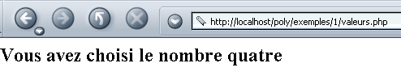
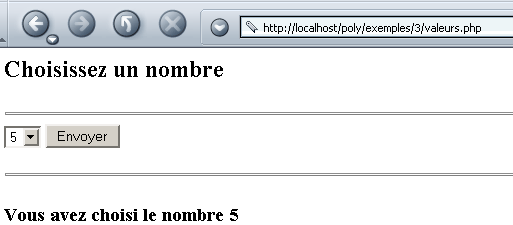
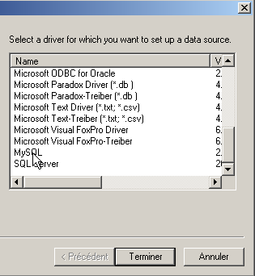
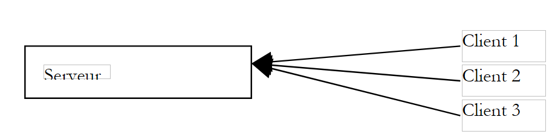
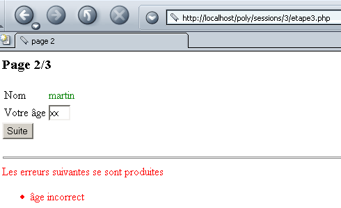

3. مقدمة إلى برمجة الويب بلغة PHP
3.1. برمجة PHP
دعونا نتذكر هنا أن PHP هي لغة بحد ذاتها، وأنه على الرغم من استخدامها بشكل أساسي في سياق تطوير تطبيقات الويب، إلا أنه يمكن استخدامها في سياقات أخرى. يقدم المستند "PHP by Example" المتاح على الرابط http://shiva.istia.univ-angers.fr/~tahe/pub/php/php.pdf أساسيات اللغة. نفترض هنا أنك قد أتقنت هذه الأساسيات بالفعل. دعونا نستخدم مثالاً بسيطاً لتوضيح كيفية تشغيل برنامج PHP على نظام Windows. تم حفظ الكود التالي باسم coucou.php.
يتم تشغيل هذا البرنامج في نافذة موجه أوامر Windows:
dos>"e:\program files\easyphp\php\php.exe" coucou.php
X-Powered-By: PHP/4.3.0-dev
Content-type: text/html
coucou
لاحظ أن مترجم PHP يرسل ما يلي بشكل افتراضي:
- مترجم PHP هو php.exe ويقع عادةً في دليل <php> الخاص بتثبيت البرنامج.
- رؤوس HTTP X-Powered-By و Content-type:
- السطر الفارغ الذي يفصل رؤوس HTTP عن بقية المستند
- المستند الذي يتكون هنا من النص المكتوب بواسطة دالة echo
3.2. ملف تكوين مترجم PHP
يتم تكوين سلوك مترجم PHP عبر ملف تكوين يسمى php.ini، والذي يوجد، في Windows، داخل دليل Windows نفسه. وهو ملف كبير الحجم إلى حد ما؛ في Windows، بالنسبة لإصدار PHP 4.2، يحتوي على ما يقرب من 1000 سطر، ثلاثة أرباعها، لحسن الحظ، عبارة عن تعليقات. دعونا نفحص بعض إعدادات تكوين PHP:
يسمح بتضمين التعليمات بين علامتي <? >. إذا تم ضبطه على Off، فيجب تضمينها بين <?php ... > | |
عند ضبطه على On، فإنه يسمح باستخدام صيغة <% =variable %> المستخدمة في ASP (Active Server Pages) | |
يُفعّل إرسال رأس HTTP X-Powered-By: PHP/4.3.0-dev. وعند ضبطه على "Off"، يتم حذف هذا الرأس. | |
يحدد نطاق الإبلاغ عن الأخطاء. هنا، سيتم الإبلاغ عن جميع الأخطاء (E_ALL) باستثناء تحذيرات وقت التشغيل (~E_NOTICE) | |
عند ضبطه على "تشغيل"، يتم وضع الأخطاء في مخرجات HTML المرسلة إلى العميل. وبالتالي يتم عرضها في المتصفح. يوصى بضبط هذا الخيار على "إيقاف". | |
سيتم تسجيل الأخطاء في ملف | |
يخزن آخر خطأ حدث في متغير $php_errormsg | |
يحدد ملف سجل الأخطاء (إذا كان log_errors=on) | |
عند ضبطه على On، يصبح عدد من المتغيرات عالمية. يعتبر ذلك ثغرة أمنية. | |
يولد رأس HTTP الافتراضي: Content-type: text/html | |
قائمة الدلائل التي سيتم البحث فيها عن الملفات المطلوبة بواسطة أوامر include أو require | |
الدليل الذي سيتم حفظ الملفات التي تخزن الجلسات النشطة المختلفة فيه. القرص المعني هو القرص الذي تم تثبيت PHP عليه. هنا، يشير /temp إلى e:\temp |
يؤثر ملف التكوين هذا على قابلية نقل برنامج PHP. في الواقع، إذا احتاج تطبيق ويب إلى استرداد قيمة حقل C من نموذج ويب، فيمكنه القيام بذلك بطرق مختلفة اعتمادًا على ما إذا كان متغير التكوين register_globals مضبوطًا على on أو off:
- off: سيتم استرداد القيمة عبر $HTTP_GET_VARS["C"] أو _GET["C"] أو $HTTP_POST_VARS["C"] أو $_POST["C"] اعتمادًا على الطريقة (GET/POST) التي يستخدمها العميل لإرسال قيم النموذج
- on: كما هو مذكور أعلاه، بالإضافة إلى $C، لأن قيمة الحقل C أصبحت عامة في متغير يحمل نفس اسم الحقل
إذا كتب مطور برنامجًا باستخدام ترميز $C لأن خادم الويب/PHP الذي يستخدمه قد تم تعيين متغير register_globals فيه على on، فلن يعمل هذا البرنامج بعد ذلك إذا تم نقله إلى خادم ويب/PHP حيث تم تعيين نفس المتغير على off. لذلك يجب أن نسعى إلى كتابة برامج تتجنب استخدام الميزات التي تعتمد على تكوين خادم الويب/PHP.
3.3. تكوين PHP أثناء التشغيل
لتحسين قابلية نقل برنامج PHP، يمكنك تعيين متغيرات تكوين PHP معينة بنفسك. يتم تعديل هذه المتغيرات أثناء تنفيذ البرنامج ولذلك البرنامج فقط. هناك دالتان مفيدتان في هذه العملية:
تُرجع قيمة متغير التكوين confVariable | |
يضبط قيمة متغير التكوين confVariable |
فيما يلي مثال نحدد فيه قيمة متغير التكوين track_errors:
<?php
// value of the track_errors configuration variable
echo "track_errors=".ini_get("track_errors")."\n";
// change this value
ini_set("track_errors","off");
// check
echo "track_errors=".ini_get("track_errors")."\n";
?>
عند التنفيذ، يتم الحصول على النتائج التالية:
E:\data\serge\web\php\poly\intro>"E:\Program Files\EasyPHP\php\php.exe" conf1.php
Content-type: text/html
track_errors=1
track_errors=off
كانت قيمة متغير التكوين track_errors في البداية 1 (~on). قمنا بتعيينها على off. لاحظ أنه إذا كان تطبيقنا يعتمد على قيم متغيرات تكوين معينة، فمن الحكمة تهيئتها داخل البرنامج نفسه.
3.4. سياق التنفيذ للأمثلة
سيتم تشغيل الأمثلة الواردة في هذه النشرة باستخدام التكوين التالي:
- جهاز كمبيوتر يعمل بنظام Windows 2000
- خادم Apache 1.3
- PHP 4.3
يتم تحديد تكوين خادم Apache في ملف httpd.conf. توجه الأسطر التالية Apache لتحميل PHP كوحدة مدمجة وتمرير أي طلب لوثيقة ذات امتدادات ملفات معينة — بما في ذلك .php — إلى مترجم PHP. هذا هو الامتداد الافتراضي الذي سنستخدمه لبرامج PHP الخاصة بنا.
LoadModule php4_module "E:/Program Files/EasyPHP/php/php4apache.dll"
AddModule mod_php4.c
AddType application/x-httpd-php .phtml .pwml .php3 .php4 .php .php2 .inc
بالإضافة إلى ذلك، قمنا بتعريف اسم مستعار "poly" لـ Apache:
Alias "/poly/" "e:/data/serge/web/php/poly/"
<Directory "e:/data/serge/web/php/poly">
Options Indexes FollowSymLinks Includes
AllowOverride All
# Order allow,deny
Allow from all
</Directory>
لنسمي المسار e:/data/serge/web/php/poly <poly>. إذا أردنا طلب المستند doc.php من خادم Apache باستخدام متصفح، فسنستخدم عنوان URL http://localhost/poly/doc.php. سيتعرف خادم Apache على الاسم المستعار poly في عنوان URL، ثم سيربط عنوان URL /poly/doc.php بالمستند <poly>\doc.php.
3.5. مثال أول
لنكتب أول تطبيق ويب/PHP لنا. يتم حفظ النص التالي في الملف heure.php:
<html>
<head>
<title>Une page php dynamique</title>
</head>
<body>
<center>
<h1>Une page PHP générée dynamiquement</h1>
<h2>
<?php
$maintenant=time();
echo date("j/m/y, h:i:s",$maintenant);
?>
</h2>
<br>
A chaque fois que vous rafraîchissez la page, l'heure change.
</body>
</html>
إذا طلبنا هذه الصفحة باستخدام متصفح، فسنحصل على النتيجة التالية:

تم إنشاء الجزء الديناميكي من الصفحة بواسطة كود PHP:
ماذا حدث بالضبط؟ طلب المتصفح عنوان URL http://localhost/poly/intro/heure.php. تلقى خادم الويب (Apache في هذا المثال) هذا الطلب، وبسبب اللاحقة .php للوثيقة المطلوبة، قرر أنه يجب عليه إعادة توجيه هذا الطلب إلى مترجم PHP. ثم يقوم المترجم بتحليل المستند heure.php وتنفيذ جميع أجزاء الكود الموجودة بين العلامات <?php >، واستبدال كل منها بالأسطر المكتوبة بواسطة عبارات echo أو print في PHP. وبالتالي، سيقوم مترجم PHP بتنفيذ جزء الكود أعلاه واستبداله بالسطر المكتوب بواسطة عبارة echo:
بمجرد تنفيذ جميع أجزاء كود PHP، يصبح مستند PHP مستند HTML بسيط، يتم إرساله بعد ذلك إلى العميل.
يجب تجنب خلط كود PHP وكود HTML قدر الإمكان. ولتحقيق ذلك، يمكننا إعادة كتابة التطبيق السابق على النحو التالي:
<!-- code PHP -->
<?php
// on récupère l'heure du moment
$maintenant=time();
$maintenant=date("j/m/y, h:i:s",$maintenant);
?>
<!-- code HTML -->
<html>
<head>
<title>Une page php dynamique</title>
</head>
<body>
<center>
<h1>Une page PHP générée dynamiquement</h1>
<h2>
<?php echo $maintenant ?>
</h2>
<br>
A chaque fois que vous rafraîchissez la page, l'heure change.
</body>
</html>
النتيجة المعروضة في المتصفح متطابقة:

النسخة الثانية أفضل من الأولى لأن كود PHP في HTML أقل. وهذا يجعل بنية الصفحة أكثر وضوحًا. يمكننا المضي قدمًا في هذا الأمر بوضع كود PHP وكود HTML في ملفين منفصلين. يتم تخزين كود PHP في الملف heure3.php:
<!-- code PHP -->
<?php
// retrieve the current time
$maintenant=time();
$maintenant=date("j/m/y, h:i:s",$maintenant);
// the answer is displayed
include "heure3-page1.php";
?>
يتم تخزين كود HTML في الملف heure3-page1.php:
<!-- code HTML -->
<html>
<head>
<title>Une page php dynamique</title>
</head>
<body>
<center>
<h1>Une page PHP générée dynamiquement</h1>
<h2>
<?php echo $maintenant ?>
</h2>
<br>
A chaque fois que vous rafraîchissez la page, l'heure change.
</body>
</html>
عندما يطلب المتصفح المستند heure3.php، سيتم تحميله وتحليله بواسطة مترجم PHP. عند الوصول إلى السطر
سيقوم المترجم بتضمين الملف heure3-page1.php في شفرة مصدر heure3.php وتنفيذه. وبالتالي، يبدو الأمر كما لو كان لدينا شفرة PHP التالية:
<!-- code PHP -->
<?php
// on récupère l'heure du moment
$maintenant=time();
$maintenant=date("j/m/y, h:i:s",$maintenant);
?>
<!-- code HTML -->
<html>
<head>
<title>Une page php dynamique</title>
</head>
<body>
<center>
<h1>Une page PHP générée dynamiquement</h1>
<h2>
<?php echo $maintenant ?>
</h2>
<br>
A chaque fois que vous rafraîchissez la page, l'heure change.
</body>
</html>
والنتيجة هي نفسها كما كانت من قبل:

سيتم اعتماد حل وضع كود PHP و HTML في ملفات منفصلة لاحقًا. ويوفر هذا الحل عدة مزايا:
- هيكل الصفحات المرسلة إلى العميل لا يختفي داخل كود PHP. وهذا يسمح بصيانتها من قبل "مصمم ويب" يتمتع بمهارات التصميم الجرافيكي ولكن خبرته في PHP محدودة.
- يعمل كود PHP كـ"واجهة أمامية" لطلبات العميل. والغرض منه هو حساب البيانات المطلوبة للصفحة التي سيتم إرجاعها إلى العميل.
ومع ذلك، فإن لهذا الحل عيبًا: فبدلاً من تحميل مستند واحد، يتطلب تحميل مستندات متعددة، مما قد يؤدي إلى انخفاض في الأداء.
3.6. استرداد المعلمات المرسلة من عميل الويب
3.6.1. عبر POST
انظر إلى النموذج التالي الذي يتعين على المستخدم فيه إدخال معلومتين: الاسم والعمر.

بمجرد أن يملأ المستخدم حقول الاسم والعمر، ينقر على زر "إرسال". ثم يتم إرسال قيم النموذج إلى الخادم. يعيد الخادم النموذج مع مصفوفة تسرد القيم التي تلقّاها:

يطلب المتصفح النموذج من تطبيق nomage.php التالي:
<?php
// do we have the expected parameters?
$post=isset($_POST["txtNom"]) && isset($_POST["txtAge"]);
if($post){
// retrieve the txtNom and txtAge parameters "posted" by the client
$nom=$_POST["txtNom"];
$age=$_POST["txtAge"];
} else {
$nom="";
$age="";
}//if
// page display
include "nomage-p1.php";
?>
بعض التوضيحات:
- يمكن إرسال حقل نموذج HTML يسمى "field" إلى الخادم باستخدام طريقة GET أو طريقة POST. إذا تم إرساله عبر طريقة GET، يمكن للخادم استرداده من المتغير $_GET["field"]؛ وإذا تم إرساله عبر طريقة POST، يمكن استرداده من المتغير $_POST["field"].
- يمكن اختبار وجود جزء من البيانات باستخدام الدالة isset(data)، التي ترجع القيمة true إذا كانت البيانات موجودة، و false في حالة عدم وجودها.
- ينشئ تطبيق nomage.php ثلاثة متغيرات: $name لاسم النموذج، و$age للعمر، و$post للإشارة إلى ما إذا كانت القيم قد "تم إرسالها" أم لا. يتم تمرير هذه المتغيرات الثلاثة إلى صفحة nomage-p1.php. لاحظ أنه بينما تشارك هذه الصفحة في إنشاء الاستجابة للعميل، فإن العميل غير مدرك لذلك. من منظور العميل، فإن تطبيق nomage.php هو الذي يستجيب.
- في المرة الأولى التي يطلب فيها العميل التطبيق nomage.php، يتم تعيين $post على false. وذلك لأنه، خلال هذا الاستدعاء الأول، لا يتم إرسال أي قيم نموذج إلى الخادم.
صفحة nomage-p1.php هي كما يلي:
<html>
<head>
<title>Formulaire web</title>
</head>
<body>
<center>
<h3>Un formulaire Web</h3>
<h4>Récupération des valeurs des champs d'un formulaire</h4>
<hr>
<form name="frmPersonne" method="post">
<table>
<tr>
<td>Nom</td>
<td><input type="text" value="<?php echo $nom ?>" name="txtNom" size="20"></td>
<td>Age</td>
<td><input type="text" value="<?php echo $age ?>" name="txtAge" size="3"></td>
<tr>
</table>
<input type="submit" name="cmdEffacer" value="Envoyer">
</form>
</center>
<hr>
<?php
// y-at-il eu des valeurs postées ?
if ($post) {
?>
<h4>Valeurs récupérées</h4>
<table border="1">
<tr>
<td>Nom</td><td><?php echo $nom ?></td>
<td width="10"></td>
<td>Age</td><td><?php echo $age ?></td>
<tr>
</table>
<?php } ?>
</body>
</html>
يعرض تطبيق nomage-p1.php النموذج frmPersonne. ويتم تعريفه بواسطة العلامة:
نظرًا لعدم تعريف سمة action للعلامة، سيرسل المتصفح بيانات النموذج إلى عنوان URL الذي طلب استردادها، أي تطبيق nomage.php.
دعونا نميز بين الحالتين اللتين يتم فيهما استدعاء تطبيق nomage.php:
- هذه هي المرة الأولى التي يستدعي فيها المستخدم التطبيق. وبالتالي، يستدعي تطبيق nomage.php تطبيق nomage-p1.php، ويمرر إليه القيم ($nom, $age, $post) = ("", "", false). ثم يعرض تطبيق nomage-p1.php نموذجًا فارغًا.
- يملأ المستخدم النموذج وينقر على زر "إرسال". ثم يتم "إرسال" قيم النموذج (txtName، txtAge) (method="post" في <form>) إلى تطبيق nomage.php (لم يتم تعريف سمة action في <form>). يقوم تطبيق nomage.php بحساب ($name, $age, $post) = (txtName, txtAge, true) ونقلها إلى تطبيق nomage-p1.php، الذي يعرض بعد ذلك نموذجًا مملوءًا مسبقًا مع جدول القيم المستردة.
3.6.2. عبر GET
في حالة إرسال قيم النموذج إلى الخادم عبر طلب GET، يصبح تطبيق nomage.php هو تطبيق nomage2.php التالي:
<?php
// do we have the expected parameters?
$get=isset($_GET["txtNom"]) && isset($_GET["txtAge"]);
if($get){
// parameters txtNom and txtAge "GETTés" are retrieved by the client
$nom=$_GET["txtNom"];
$age=$_GET["txtAge"];
} else {
$nom="";
$age="";
}//if
// page display
include "nomage-p2.php";
?>
تطبيق nomage-p2.php مطابق لتطبيق nomage-p1.php، مع الاختلافات الطفيفة التالية:
- تم تعديل علامة النموذج:
- يسترد التطبيق الآن متغير $get بدلاً من $post:
أثناء التشغيل، عندما يتم إدخال القيم في النموذج وإرسالها إلى الخادم، يعكس المتصفح في حقل عنوان URL أن القيم تم إرسالها باستخدام طريقة GET:

3.7. استرداد رؤوس HTTP المرسلة من قبل عميل الويب
عندما يرسل المتصفح طلبًا إلى خادم الويب، فإنه يرسل عددًا من رؤوس HTTP. من المفيد أحيانًا الوصول إلى هذه الرؤوس. يمكننا البدء باستخدام المصفوفة الترابطية $_SERVER. تحتوي هذه المصفوفة على معلومات متنوعة مقدمة من خادم الويب، بما في ذلك، من بين أمور أخرى، رؤوس HTTP المرسلة من قبل العميل. انظر إلى البرنامج التالي، الذي يعرض جميع قيم المصفوفة $_SERVER:
<?php
// displays variables related to the web server
// send simple text
header("Content-type: text/plain");
// associative array path $_SERVER
reset($_SERVER);
while (list($clé,$valeur)=each($_SERVER)){
echo "$clé : $valeur\n";
}//while
?>
لنحفظ هذا الكود في ملف headers.php ونطلب هذا الرابط باستخدام متصفح:

نسترد عددًا من المعلومات، بما في ذلك رؤوس HTTP المرسلة من المتصفح. هذه هي القيم المرتبطة بالمفاتيح التي تبدأ بـ HTTP. دعونا نحلل بعض المعلومات التي تم الحصول عليها أعلاه:
أنواع المستندات التي يقبلها عميل الويب | |
مجموعات الأحرف المقبولة في المستندات | |
أنواع الترميز المقبولة للمستندات | |
أنواع اللغات المقبولة للمستندات | |
نوع الاتصال بالخادم. Keep-Alive: يجب على الخادم إبقاء الاتصال مفتوحًا بعد إرسال استجابته | |
? المدة القصوى للاتصال | |
الجهاز المضيف الذي يستعلم عنه العميل | |
هوية العميل | |
عنوان IP للعميل | |
منفذ الاتصال الذي يستخدمه العميل | |
بروتوكول HTTP الذي يستخدمه الخادم | |
طريقة الطلب التي يستخدمها العميل (GET أو POST) | |
استعلام ?param1=val1¶m2=val2&... مضاف إلى عنوان URL المطلوب (طريقة GET) |
من خلال تعديل بسيط على كود البرنامج السابق، يمكننا استرداد رؤوس HTTP فقط:
<?php
// displays variables related to the web server
// send simple text
header("Content-type: text/plain");
// associative array path $_SERVER
reset($_SERVER);
while (list($clé,$valeur)=each($_SERVER)){
// header HTTP ?
if(strtolower(substr($clé,0,4))=="http")
echo substr($clé,5)." : $valeur\n";
}//while
?>
النتيجة المعروضة في المتصفح هي كما يلي:

إذا كنت تريد رأس HTTP معينًا، فيمكنك كتابة، على سبيل المثال، $_SERVER["HTTP_ACCEPT"].
3.8. استرداد معلومات البيئة
يعمل خادم الويب/PHP في بيئة يمكن الوصول إليها عبر المصفوفة $_ENV، التي تخزن خصائص متنوعة لبيئة التنفيذ. انظر إلى تطبيق env1.php التالي:
<?php
// displays variables related to the web server
// send simple text
header("Content-type: text/plain");
// associative array path $_ENV
reset($_ENV);
while (list($clé,$valeur)=each($_ENV)){
echo "$clé : $valeur\n";
}//while
?>
ينتج عن ذلك النتيجة التالية في المتصفح (عرض جزئي):

على سبيل المثال، كما هو موضح أعلاه، يعمل خادم الويب/PHP على نظام التشغيل Windows NT.
3.9. أمثلة
3.9.1. إنشاء النماذج الديناميكية - 1
لنأخذ على سبيل المثال إنشاء نموذج يحتوي على عنصر تحكم واحد فقط: مربع قائمة منسدلة. يتم إنشاء محتويات مربع القائمة المنسدلة هذا ديناميكيًا باستخدام قيم مأخوذة من مصفوفة. في الواقع، غالبًا ما يتم استرداد هذه القيم من قاعدة بيانات. النموذج كما يلي:

إذا نقرت على "إرسال" في المثال أعلاه، فستحصل على الاستجابة التالية:

فيما يلي كود HTML للنموذج الأولي، بعد إنشائه:
<html>
<head>
<title>Génération de formulaire</title>
</head>
<body>
<h2>Choisissez un nombre</h2>
<hr>
<form name="frmvaleurs" method="post" action="valeurs.php">
<select name="cmbValeurs" size="1">
<option>un</option>
<option>deux</option>
<option>trois</option>
<option>quatre</option>
<option>cinq</option>
<option>six</option>
<option>sept</option>
<option>huit</option>
<option>neuf</option>
<option>dix</option>
</select>
<input type="submit" value="Envoyer" name="cmdEnvoyer">
</form>
</body>
</html>
يتكون تطبيق PHP من صفحة رئيسية، valeurs.php، يتم استدعاؤها لاسترداد النموذج الأولي (قائمة القيم) ومعالجة القيم الموجودة فيه وإرجاع الاستجابة (القيمة المحددة). يقوم التطبيق بإنشاء صفحتين مختلفتين:
- صفحة النموذج الأولي، التي سيتم إنشاؤها بواسطة برنامج valeurs-p1.php
- الصفحة التي تعرض الرد المقدم للمستخدم، والتي يتم إنشاؤها بواسطة برنامج valeurs-p2.php
تطبيق valeurs.php هو كما يلي:
<?php
// the values table
$valeurs=array("un","deux","trois","quatre","cinq","six","sept","huit","neuf","dix");
// do we have the expected parameters
$requêteVide=! isset($_POST["cmbValeurs"]);
// we retrieve the user's choice
if ($requêteVide){
// initial request
include "valeurs-p1.php";
}else{
// response to a POST
$choix=$_POST["cmbValeurs"];
include "valeurs-p2.php";
}
?>
وهو يحدد مصفوفة القيم ويستدعي ملف valeurs-p1.php لإنشاء النموذج الأولي إذا كان طلب العميل فارغًا، أو ملف valeurs-p2.php لإنشاء الاستجابة إذا تم استلام طلب صالح. ويكون برنامج valeurs-p1.php كما يلي:
<html>
<head>
<title>Génération de formulaire</title>
</head>
<body>
<h2>Choisissez un nombre</h2>
<hr>
<form name="frmvaleurs" method="post" action="valeurs.php">
<select name="cmbValeurs" size="1">
<?php
for($i=0;$i<count($valeurs);$i++){
echo "<option>$valeurs[$i]</option>\n";
}//for
?>
</select>
<input type="submit" value="Envoyer" name="cmdEnvoyer">
</form>
</body>
</html>
يتم إنشاء قائمة قيم مربع التحرير والسرد ديناميكيًا من المصفوفة $values التي يتم تمريرها بواسطة valeurs.php. يقوم برنامج valeurs-p2.php بإنشاء الاستجابة:
<html>
<head>
<title>réponse</title>
</head>
<body>
<h2>Vous avez choisi le nombre <?php echo $choix ?></h2>
</body>
</html>
هنا، نعرض ببساطة قيمة المتغير $choix، الذي يتم تمريره أيضًا من ملف valeurs.php.
3.9.2. إنشاء النماذج الديناميكية - 2
سنعود إلى المثال السابق ونعدله على النحو التالي. يبقى النموذج كما هو:

لكن الرد مختلف:

في الاستجابة، نعيد النموذج، مع الإشارة إلى الرقم الذي اختاره المستخدم أسفله. علاوة على ذلك، هذا الرقم هو الذي يظهر على أنه محدد في القائمة التي تعرضها الاستجابة.
فيما يلي كود ملف valeurs.php:
<?php
// configuration
ini_set("register_globals","off");
// the values table
$valeurs=array("un","deux","trois","quatre","cinq","six","sept","huit","neuf","dix");
// we retrieve the user's possible choice
$choix=$_POST["cmbValeurs"];
// the answer is displayed
include "valeurs-p1.php";
?>
لاحظ أننا حرصنا هنا على تكوين PHP بحيث لا توجد متغيرات عامة. يعد هذا إجراءً احترازيًا جيدًا بشكل عام، حيث تشكل المتغيرات العامة مخاطر أمنية. هناك بديل آخر وهو تهيئة جميع المتغيرات التي نستخدمها. سيؤدي هذا إلى "الكتابة فوق" أي متغير عام يحمل نفس الاسم.
يتم عرض صفحة النموذج بواسطة values-p1.php:
<html>
<head>
<title>Génération de formulaire</title>
</head>
<body>
<h2>Choisissez un nombre</h2>
<hr>
<form name="frmvaleurs" method="post" action="valeurs.php">
<select name="cmbValeurs" size="1">
<?php
for($i=0;$i<count($valeurs);$i++){
// si option courante est égale au choix, on la sélectionne
if (isset($choix) && $choix==$valeurs[$i])
echo "<option selected>$valeurs[$i]</option>\n";
else echo "<option>$valeurs[$i]</option>\n";
}//for
?>
</select>
<input type="submit" value="Envoyer" name="cmdEnvoyer">
</form>
<?php
// suite page
if(isset($choix)){
echo "<hr>\n";
echo "<h3>Vous avez choisi le nombre $choix</h3>\n";
}
?>
</body>
</html>
يعتمد برنامج إنشاء الصفحة على المتغير $choix الذي يمرره برنامج valeurs.php. لاحظ هنا أن بنية HTML للصفحة بدأت تصبح "مزدحمة" بشكل خطير برموز PHP. يمكن لبرنامج valeurs.php الأمامي أن يقوم بمزيد من العمل، كما هو موضح في الإصدار الجديد التالي:
<?php
// configuration
ini_set("register_globals","off");
// the values table
$valeurs=array("un","deux","trois","quatre","cinq","six","sept","huit","neuf","dix");
// we retrieve the user's possible choice
$choix=$_POST["cmbValeurs"];
// calculate the list of values to be displayed
$HTMLvaleurs="";
for($i=0;$i<count($valeurs);$i++){
// if the current option is equal to the choice, it is selected
if (isset($choix) && $choix==$valeurs[$i])
$HTMLvaleurs.="<option selected>$valeurs[$i]</option>\n";
else $HTMLvaleurs.="<option>$valeurs[$i]</option>\n";
}//for
// calculate the second part of the page
$HTMLpart2="";
if(isset($choix)){
$HTMLpart2="<hr>\n";
$HTMLpart2.="<h3>Vous avez choisi le nombre $choix</h3>\n";
}//if
// the answer is displayed
include "valeurs-p2.php";
?>
يتم الآن إنشاء الصفحة بواسطة البرنامج التالي valeurs-p2.php:
<html>
<head>
<title>Génération de formulaire</title>
</head>
<body>
<h2>Choisissez un nombre</h2>
<hr>
<form name="frmvaleurs" method="post" action="valeurs.php">
<select name="cmbValeurs" size="1">
<?php
// affichage liste de valeurs
echo $HTMLvaleurs;
?>
</select>
<input type="submit" value="Envoyer" name="cmdEnvoyer">
</form>
<?php
// affichage partie 2
echo $HTMLpart2;
?>
</body>
</html>
أصبح كود HTML الآن خاليًا من معظم كود PHP. ومع ذلك، دعونا نتذكر الغرض من تقسيم النظام إلى برنامج واجهة أمامية يقوم بتحليل ومعالجة طلب العميل وبرامج مسؤولة ببساطة عن عرض الصفحات التي تم تكوينها بالبيانات المرسلة من الواجهة الأمامية: وهو فصل عمل مطور PHP عن عمل مصمم الويب. يعمل مطور PHP على الواجهة الأمامية، بينما يعمل مصمم الويب على صفحات الويب. في الإصدار الجديد، لم يعد بإمكان مصمم الويب، على سبيل المثال، العمل على الجزء 2 من الصفحة لأنه لم يعد لديه حق الوصول إلى كود HTML الخاص بها. في الإصدار الأول، كان بإمكانه ذلك. وبالتالي، لا تعتبر أي من الطريقتين مثالية.
3.9.3. إنشاء النماذج الديناميكية - 3
نحن نعيد النظر في نفس المشكلة كما في السابق، ولكن هذه المرة يتم استرداد القيم من قاعدة بيانات. في مثالنا، هذه قاعدة بيانات MySQL:
- اسم قاعدة البيانات هو dbValues
- مالكها هو admDbValeurs وكلمة المرور هي mdpDbValeurs
- تحتوي قاعدة البيانات على جدول واحد يسمى tvaleurs
- يحتوي هذا الجدول على حقل واحد فقط من نوع عدد صحيح يُسمى «value»
dos> mysql --database=dbValeurs --user=admDbValeurs --password=mdpDbValeurs
mysql> show tables;
+---------------------+
| Tables_in_dbValeurs |
+---------------------+
| tvaleurs |
+---------------------+
1 row in set (0.00 sec)
mysql> describe tvaleurs;
+--------+---------+------+-----+---------+-------+
| Field | Type | Null | Key | Default | Extra |
+--------+---------+------+-----+---------+-------+
| valeur | int(11) | | | 0 | |
+--------+---------+------+-----+---------+-------+
mysql> select * from tvaleurs;
+--------+
| valeur |
+--------+
| 0 |
| 1 |
| 2 |
| 3 |
| 4 |
| 6 |
| 5 |
| 7 |
| 8 |
| 9 |
+--------+
10 rows in set (0.00 sec)
في تطبيق قاعدة البيانات، تتضمن العملية عمومًا الخطوات التالية:
- الاتصال بنظام إدارة قواعد البيانات
- إرسال استعلامات SQL إلى قاعدة بيانات نظام إدارة قواعد البيانات
- معالجة نتائج هذه الاستعلامات
- إغلاق الاتصال بنظام إدارة قواعد البيانات
يتم تنفيذ الخطوتين 2 و 3 بشكل متكرر، ولا يتم إغلاق الاتصال إلا في نهاية عمليات قاعدة البيانات. هذا نمط قياسي نسبيًا لأي شخص عمل مع قاعدة بيانات بشكل تفاعلي. يقدم الجدول التالي تعليمات PHP لتنفيذ هذه العمليات المختلفة مع نظام إدارة قواعد البيانات MySQL:
$connection = mysql_pconnect($host, $user, $pwd) $connection = mysql_connect($host, $user, $pwd) $host: اسم المضيف للجهاز الذي يعمل عليه نظام إدارة قواعد البيانات MySQL. من الممكن العمل مع مثيلات نظام إدارة قواعد البيانات MySQL عن بُعد. $user: اسم المستخدم المعترف به من قِبل قاعدة بيانات MySQL $pwd: كلمة المرور الخاصة بهم $connection: الاتصال الذي تم إنشاؤه تقوم mysql_pconnect بإنشاء اتصال دائم مع نظام إدارة قواعد البيانات MySQL. لا يتم إغلاق هذا الاتصال في نهاية البرنامج النصي. بل يظل مفتوحًا. وبالتالي، عندما يلزم فتح اتصال جديد بنظام إدارة قواعد البيانات، سيبحث PHP عن اتصال موجود ينتمي إلى نفس المستخدم. وإذا عثر على واحد، فإنه يستخدمه. وهذا يوفر الوقت. تقوم mysql_connect بإنشاء اتصال غير دائم، وبالتالي يتم إغلاقه عند انتهاء العمل مع نظام إدارة قواعد البيانات MySQL. | |
$results = mysql_db_query($db, $query, $connection) $db: قاعدة بيانات MySQL التي ستعمل عليها $query: استعلام SQL (إدراج، حذف، تحديث، اختيار، ...) $connection: الاتصال بنظام إدارة قواعد البيانات MySQL $results: نتائج الاستعلام — تختلف هذه النتائج اعتمادًا على ما إذا كان الاستعلام عبارة عن عملية SELECT أو عملية تحديث (INSERT، UPDATE، DELETE، إلخ) | |
$results = mysql_db_query($db, "SELECT ...", $connection) نتيجة SELECT هي جدول، أي مجموعة من الصفوف والأعمدة. يمكن الوصول إلى هذا الجدول عبر $results. $row = mysql_fetch_row($results) يقرأ صفًا من الجدول ويخزنه في $row كمصفوفة. وبالتالي، فإن $row[i] هو العمود i من الصف الذي تم استرداده. يمكن استدعاء دالة mysql_fetch_row بشكل متكرر. وفي كل مرة، تقرأ صفًا جديدًا من جدول $results. عند الوصول إلى نهاية الجدول، ترجع الدالة قيمة false. وبالتالي، يمكن استخدام الجدول $results على النحو التالي: while($row = mysql_fetch_row($results)){ // معالجة الصف الحالي $row }//while | |
$results = mysql_db_query($db, "insert ...", $connection) تكون قيمة $results صحيحة أو خاطئة حسب نجاح العملية أو فشلها. في حالة النجاح، تُرجع الدالة mysql_affected_rows عدد الصفوف التي تم تعديلها بواسطة عملية التحديث. | |
mysql_close($connection) $connection: اتصال بنظام إدارة قواعد البيانات MySQL |
يصبح الكود في ملف الواجهة الأمامية valeurs.php كما يلي:
<?php
// configuration
ini_set("register_globals","off");
ini_set("display_errors","off");
ini_set("track_errors","on");
// the values table
list($erreur,$valeurs)=getValeurs();
// was there a mistake?
if($erreur){
// error page display
include "valeurs-err.php";
// end
return;
}//if
// we retrieve the user's possible choice
$choix=$_POST["cmbValeurs"];
// calculate the list of values to be displayed
$HTMLvaleurs="";
for($i=0;$i<count($valeurs);$i++){
// if the current option is equal to the choice, it is selected
if (isset($choix) && $choix==$valeurs[$i])
$HTMLvaleurs.="<option selected>$valeurs[$i]</option>\n";
else $HTMLvaleurs.="<option>$valeurs[$i]</option>\n";
}//for
// calculate the second part of the page
$HTMLpart2="";
if(isset($choix)){
$HTMLpart2="<hr>\n";
$HTMLpart2.="<h3>Vous avez choisi le nombre $choix</h3>\n";
}//if
// the answer is displayed
include "valeurs-p1.php";
// end
return;
// ------------------------------------------------------------------------
function getValeurs(){
// retrieves values from a MySQL database
$user="admDbValeurs";
$pwd="mdpDbValeurs";
$db="dbValeurs";
$hote="localhost";
$table="tvaleurs";
$champ="valeur";
// open a persistent connection to the MySQL server
// or a normal connection
($connexion=mysql_pconnect($hote,$user,$pwd))
|| ($connexion=mysql_connect($hote,$user,$pwd));
if(! $connexion)
return array("Base de données indisponible(".mysql_error()."). Veuillez recommencer ultérieurement.");
// obtaining values
$selectValeurs=mysql_db_query($db,"select $champ from $table",$connexion);
if(! $selectValeurs)
return array("Base de données indisponible(".mysql_error()."). Veuillez recommencer ultérieurement.");
// the values are displayed in a table
$valeurs=array();
while($ligne=mysql_fetch_row($selectValeurs)){
$valeurs[]=$ligne[0];
}//while
// closing the connection (if it's persistent, it won't actually be closed)
mysql_close($connexion);
// result feedback
return array("",$valeurs);
}//getValeurs
?>
هذه المرة، لا يتم توفير القيم المراد وضعها في القائمة المنسدلة بواسطة مصفوفة، بل بواسطة الدالة getValues(). هذه الدالة:
- تفتح اتصالاً دائماً (mysql_pconnect) بخادم MySQL عن طريق تمرير اسم مستخدم وكلمة مرور مسجلين.
- بمجرد إنشاء الاتصال، يتم تنفيذ استعلام SELECT لاسترداد القيم من جدول tvaleurs في قاعدة بيانات dbValeurs.
- يتم وضع نتيجة استعلام SELECT في المصفوفة $values، والتي يتم إرجاعها إلى البرنامج المستدعي.
- تُرجع الدالة في الواقع مصفوفة تحتوي على عنصرين ($error، $values)، حيث يكون العنصر الأول عبارة عن رسالة خطأ في حالة حدوث خطأ، أو سلسلة فارغة في حالة عدم حدوث خطأ.
- يقوم البرنامج المستدعي بالتحقق مما إذا كان قد حدث خطأ، وفي هذه الحالة، يعرض صفحة `valeurs-err.php`. وتبدو هذه الصفحة كما يلي:
<html>
<head>
<title>Erreur</title>
</head>
<body>
<h3>L'erreur suivante s'est produite</h3>
<font color="red">
<h4><?php echo $erreur ?></h4>
</font>
</body>
</html>
- إذا لم يكن هناك خطأ، فإن البرنامج المستدعي يحتوي على القيم في المصفوفة $values. وبالتالي، نعود إلى المشكلة السابقة.
فيما يلي مثالان على التنفيذ:
- مع وجود خطأ

- بدون خطأ

3.9.4. إنشاء النماذج ديناميكيًا - 4
في المثال السابق، ماذا سيحدث إذا قمنا بتغيير نظام إدارة قواعد البيانات (DBMS)؟ إذا قمنا بالتحويل من MySQL إلى Oracle أو SQL Server، على سبيل المثال؟ سيكون علينا إعادة كتابة الدالة getValues() التي توفر القيم. وتتمثل ميزة دمج الكود اللازم لاسترداد القيم المراد عرضها في القائمة في دالة واحدة في أن الكود الذي يتطلب التعديل يكون محددًا بوضوح ولا يكون مبعثرًا في جميع أنحاء البرنامج بأكمله. يمكن إعادة كتابة الدالة getValues() بحيث تكون مستقلة عن نظام إدارة قواعد البيانات المستخدم. كل ما تحتاجه هو العمل مع برنامج تشغيل ODBC الخاص بنظام إدارة قواعد البيانات بدلاً من العمل مباشرة مع نظام إدارة قواعد البيانات نفسه.
هناك العديد من قواعد البيانات في السوق. لتوحيد الوصول إلى قواعد البيانات في نظام MS Windows، طورت Microsoft واجهة تسمى ODBC (Open DataBase Connectivity). تخفي هذه الطبقة الميزات المحددة لكل قاعدة بيانات خلف واجهة قياسية. هناك العديد من برامج تشغيل ODBC المتاحة في نظام MS Windows التي تسهل الوصول إلى قواعد البيانات. فيما يلي، على سبيل المثال، قائمة ببرامج تشغيل ODBC المثبتة على جهاز يعمل بنظام Windows:

يحتوي نظام إدارة قواعد البيانات MySQL أيضًا على برنامج تشغيل ODBC. يمكن لأي تطبيق يعتمد على برامج تشغيل ODBC استخدام أي من قواعد البيانات المذكورة أعلاه دون الحاجة إلى إعادة الكتابة.
 |
لنجعل قاعدة بيانات MySQL الخاصة بنا dbValeurs متاحة عبر برنامج تشغيل ODBC. الإجراء التالي مخصص لنظام التشغيل Windows 2000. بالنسبة لأنظمة Win9x، فإن الإجراء مشابه جدًا. قم بتنشيط "مدير موارد ODBC":

استخدم الزر [إضافة] لإضافة مصدر بيانات ODBC جديد:

حدد برنامج تشغيل MySQL ODBC، وانقر على [إنهاء]، ثم حدد خصائص مصدر البيانات:

الاسم المخصص لمصدر بيانات ODBC (odbc-valeurs) | |
اسم الجهاز الذي يستضيف نظام إدارة قواعد البيانات MySQL الذي يدير مصدر البيانات (localhost) | |
اسم قاعدة بيانات MySQL التي تمثل مصدر البيانات (dbValues) | |
مستخدم يتمتع بحقوق وصول كافية إلى قاعدة بيانات MySQL المراد إدارتها (admDbValeurs) | |
كلمة المرور الخاصة به (mdpDbValeurs) |
PHP قادر على العمل مع برامج تشغيل ODBC. يسرد الجدول التالي الوظائف التي تحتاج إلى معرفتها:
$connection = odbc_pconnect($dsn, $user, $pwd) $connection = odbc_connect($dsn, $user, $pwd) $dsn: اسم مصدر البيانات (DSN) للجهاز الذي يعمل عليه نظام إدارة قواعد البيانات $user: اسم مستخدم معروف لنظام إدارة قواعد البيانات $pwd: كلمة مرور المستخدم $connection: الاتصال الذي تم إنشاؤه odbc_pconnect ينشئ اتصالاً دائماً بنظام إدارة قواعد البيانات. لا يتم إغلاق هذا الاتصال في نهاية البرنامج النصي؛ بل يظل مفتوحاً. وبالتالي، عندما يلزم إنشاء اتصال جديد بنظام إدارة قواعد البيانات، سيبحث PHP عن اتصال موجود ينتمي إلى نفس المستخدم. وإذا عثر على واحد، فإنه يستخدمه. وهذا يوفر الوقت. تقوم وظيفة odbc_connect بإنشاء اتصال غير دائم، وبالتالي يتم إغلاقه عند انتهاء العمل مع نظام إدارة قواعد البيانات. | |
$preparedQuery = odbc_prepare($connection, $query) $query: استعلام SQL (إدراج، حذف، تحديث، اختيار، ...) $connection: الاتصال بنظام إدارة قواعد البيانات يقوم بتحليل $query وإعداده للتنفيذ. يتم الإشارة إلى الاستعلام "المُعد" بهذه الطريقة من خلال نتيجة $preparedQuery. إعداد استعلام للتنفيذ ليس إلزامياً ولكنه يحسن الأداء لأن الاستعلام يتم تحليله مرة واحدة فقط. ثم نطلب تنفيذ الاستعلام المُعد. إذا طلبنا تنفيذ استعلام غير مُعد بشكل متكرر، فسيتم تحليله في كل مرة، وهو أمر غير ضروري. بمجرد إعداده، يتم تنفيذ الاستعلام بواسطة $res=odbc_execute($preparedQuery) تُرجع true أو false اعتمادًا على نجاح تنفيذ الاستعلام أو فشله | |
نتيجة SELECT هي جدول، أي مجموعة من الصفوف والأعمدة. يمكن الوصول إلى هذا الجدول عبر $preparedQuery. تقوم الدالة $res=odbc_fetch_row($preparedQuery) بقراءة صف من الجدول الناتج عن SELECT. وتُرجع القيمة true أو false حسب نجاح أو فشل تنفيذ الاستعلام. تتوفر عناصر الصف المسترد عبر الدالة odbc_result: $val=odbc_result($preparedQuery,i): العمود i من الصف الذي تمت قراءته للتو $val=odbc_result($preparedQuery,"columnName"): العمود columnName من الصف الذي تمت قراءته للتو يمكن استدعاء الدالة odbc_fetch_row بشكل متكرر. في كل مرة، تقرأ صفًا جديدًا من جدول النتائج. عند الوصول إلى نهاية الجدول، ترجع الدالة false. وبالتالي، يمكن معالجة جدول النتائج على النحو التالي: | |
odbc_close($connection) $connection: اتصال بنظام إدارة قواعد البيانات MySQL |
دالة getValues() المسؤولة عن استرداد القيم من قاعدة بيانات ODBC هي كما يلي:
// ------------------------------------------------------------------------
function getValeurs(){
// récupère les valeurs dans une base MySQL
$user="admDbValeurs";
$pwd="mdpDbValeurs";
$db="dbValeurs";
$dsn="odbc-valeurs";
$table="tvaleurs";
$champ="valeur";
// ouverture d'une connexion persistante au serveur MySQL
// ou sinon d'une connexion normale
($connexion=odbc_pconnect($dsn,$user,$pwd))
|| ($connexion=odbc_connect($dsn,$user,$pwd));
if(! $connexion)
return array("1 - Base de données indisponible(".odbc_error()."). Veuillez recommencer ultérieurement.");
// obtention des valeurs
$selectValeurs=odbc_prepare($connexion,"select $champ from $table");
if(! odbc_execute($selectValeurs))
return array("2 - Base de données indisponible(".odbc_error()."). Veuillez recommencer ultérieurement.");
// les valeurs sont mises dans un tableau
$valeurs=array();
while(odbc_fetch_row($selectValeurs)){
$valeurs[]=odbc_result($selectValeurs,$champ);
}//while
// fermeture de la connexion (si elle est persistante, elle ne sera en fait pas fermée)
odbc_close($connexion);
// retour du résultat
return array("",$valeurs);
}//getValeurs
?>
إذا قمنا بتشغيل التطبيق الجديد دون تنشيط قاعدة بيانات odbc-values، فسنحصل على النتيجة التالية:

لاحظ أن رمز الخطأ الذي أعاده برنامج تشغيل ODBC (odbc_error()=S1000) ليس واضحًا تمامًا. إذا تم توفير قاعدة بيانات odbc-values، فسنحصل على نفس النتائج السابقة.
في الختام، يمكننا القول إن هذا الحل جيد لصيانة التطبيق. في الواقع، إذا احتاجت قاعدة البيانات إلى التغيير، فلن يحتاج التطبيق نفسه إلى التغيير. سيقوم مسؤول النظام ببساطة بإنشاء مصدر بيانات ODBC جديد لقاعدة البيانات الجديدة. مرة أخرى، مع وضع الصيانة في الاعتبار، سيكون من الجيد وضع معلمات الوصول إلى قاعدة البيانات ($dsn، $user، $pwd) في ملف منفصل يقوم التطبيق بتحميله عند بدء التشغيل (include).
3.9.5. استرداد القيم من نموذج
لقد قمنا بالفعل باسترداد القيم من نموذج تم إرساله بواسطة عميل ويب في عدة مناسبات. يوضح المثال التالي نموذجًا يتضمن مكونات HTML الأكثر شيوعًا ومصممًا لاسترداد المعلمات المرسلة بواسطة متصفح العميل. النموذج كما يلي:

وهو مملوء مسبقًا. يمكن للمستخدم بعد ذلك تعديله:

إذا نقر على زر [إرسال]، يعرض الخادم قائمة بقيم النموذج:

النموذج عبارة عن صفحة HTML ثابتة باسم balises.html:
<html>
<head>
<title>balises</title>
<script language="JavaScript">
function effacer(){
alert("Vous avez cliqué sur le bouton Effacer");
}//effacer
</script>
</head>
<body background="/images/standard.jpg">
<form method="POST" action="parameters.php">
<table border="0">
<tr>
<td>Etes-vous marié(e)</td>
<td>
<input type="radio" value="oui" name="R1">Oui
<input type="radio" name="R1" value="non" checked>Non
</td>
</tr>
<tr>
<td>Cases à cocher</td>
<td>
<input type="checkbox" name="C1" value="un">1
<input type="checkbox" name="C2" value="deux" checked>2
<input type="checkbox" name="C3" value="trois">3
</td>
</tr>
<tr>
<td>Champ de saisie</td>
<td>
<input type="text" name="txtSaisie" size="20" value="qqs mots">
</td>
</tr>
<tr>
<td>Mot de passe</td>
<td>
<input type="password" name="txtMdp" size="20" value="unMotDePasse">
</td>
</tr>
<tr>
<td>Boîte de saisie</td>
<td>
<textarea rows="2" name="areaSaisie" cols="20">
ligne1
ligne2
ligne3
</textarea>
</td>
</tr>
<tr>
<td>combo</td>
<td>
<select size="1" name="cmbValeurs">
<option>choix1</option>
<option selected>choix2</option>
<option>choix3</option>
</select>
</td>
</tr>
<tr>
<td>liste à choix simple</td>
<td>
<select size="3" name="lst1">
<option selected>liste1</option>
<option>liste2</option>
<option>liste3</option>
<option>liste4</option>
<option>liste5</option>
</select>
</td>
</tr>
<tr>
<td>liste à choix multiple</td>
<td>
<select size="3" name="lst2[]" multiple>
<option selected>liste1</option>
<option>liste2</option>
<option selected>liste3</option>
<option>liste4</option>
<option>liste5</option>
</select>
</td>
</tr>
<tr>
<td>bouton</td>
<td>
<input type="button" value="Effacer" name="cmdEffacer" onclick="effacer()">
</td>
</tr>
<tr>
<td>envoyer</td>
<td>
<input type="submit" value="Envoyer" name="cmdRenvoyer">
</td>
</tr>
<tr>
<td>rétablir</td>
<td>
<input type="reset" value="Rétablir" name="cmdRétablir">
</td>
</tr>
</table>
<input type="hidden" name="secret" value="uneValeur">
</form>
</body>
</html>
يلخص الجدول أدناه دور العلامات المختلفة في هذا المستند والقيمة التي يستردها PHP لأنواع مختلفة من مكونات النموذج. يمكن إرسال قيمة حقل HTML المسمى C عبر طلب POST أو GET. في الحالة الأولى، سيتم استردادها في المتغير $_GET["C"]، وفي الحالة الثانية في المتغير $_POST["C"]. يفترض الجدول التالي استخدام طلب POST.
HTML | علامة HTML | القيمة التي يستردها PHP |
<form method="POST" > | ||
<input type="text" name="txtSaisie" size="20" value="بعض الكلمات"> | $_POST["txtSaisie"]: القيمة الموجودة في حقل txtSaisie في النموذج | |
<input type="password" name="txtPassword" size="20" value="aPassword"> | $_POST["txtmdp"]: القيمة الموجودة في حقل txtMdp في النموذج | |
<textarea rows="2" name="areaSaisie" cols="20"> السطر 1 السطر 2 السطر 3 </textarea> | $_POST["areaSaisie"]: الأسطر الموجودة في حقل areaSaisie كسلسلة واحدة: "السطر1\r\nالسطر2\r\nالسطر3". يتم فصل الأسطر بواسطة التسلسل "\r\n". | |
<input type="radio" value="Yes" name="R1">نعم <input type="radio" name="R1" value="no" checked>لا | $_POST["R1"]: قيمة (=value) زر الاختيار المحدد بـ "نعم" أو "لا" حسب الحالة. | |
<input type="checkbox" name="C1" value="one">1 <input type="checkbox" name="C2" value="two" checked>2 <input type="checkbox" name="C3" value="three">3 | $_POST["C1"]: قيمة مربع الاختيار إذا تم تحديده؛ وإلا، فإن المتغير غير موجود. وبالتالي، إذا تم تحديد مربع الاختيار C1، فإن $_POST["C1"] يساوي "one"؛ وإلا، فإن $_POST["C1"] غير موجود. | |
<select size="1" name="cmbValeurs"> <option>choice1</option> <option selected>choice2</option> <option>الخيار 3</option> </select> | $_POST["cmbValeurs"]: الخيار المحدد من القائمة، على سبيل المثال "choice3". | |
<select size="3" name="lst1"> <option selected>list1</option> <option>list2</option> <option>القائمة 3</option> <option>القائمة 4</option> <option>القائمة 5</option> </select> | $_POST["lst1"]: الخيار المحدد من القائمة، على سبيل المثال "list5". | |
<select size="3" name="lst2[]" multiple> <option>list1</option> <option>list2</option> <option selected>list3</option> <option>list4</option> <option>list5</option> </select> | $_POST["lst2"]: مصفوفة من الخيارات المحددة من القائمة، على سبيل المثال ["list3,"list5"]. لاحظ الصيغة المحددة لعلامة HTML لهذه الحالة بالذات: lst2[]. | |
<input type="hidden" name="secret" value="aValue"> | $_POST["secret"]: قيمة الحقل، وهنا "aValue". |
في مثالنا، يتم إرسال قيم النموذج إلى برنامج parameters.php:
فيما يلي كود البرنامج الأخير:
<?php
// configuration
ini_set("register_globals","off");
ini_set("display_errors","off");
// call method
$méthode=$_SERVER["REQUEST_METHOD"];
// parameter recovery
// it depends on the method used to send them
if($méthode=="GET")
$param=$_GET;
else $param=$_POST;
$R1=$param["R1"];
$C1=$param["C1"];
$C2=$param["C2"];
$C3=$param["C3"];
$txtSaisie=$param["txtSaisie"];
$txtMdp=$param["txtMdp"];
$areaSaisie=implode("<br>",explode("\r\n",$param["areaSaisie"]));
$cmbValeurs=$param["cmbValeurs"];
$lst1=$param["lst1"];
$lst2=implode("<br>",$param["lst2"]);
$secret=$param["secret"];
// valid request?
$requêteValide=isset($R1) && (isset($C1) || isset($C2) || isset($C3))
&& isset($txtSaisie) && isset($txtMdp) && isset($areaSaisie)
&& isset($cmbValeurs) && isset($lst1) && isset($lst2)
&& isset($secret);
// page display
if ($requêteValide)
include "parameters-p1.php";
else include "balises.html";
?>
دعونا نحلل بعض النقاط في هذا البرنامج:
- لا يعتمد التطبيق على كيفية تمرير قيم النماذج إلى الخادم. في كلتا الحالتين المحتملتين (GET و POST)، تتم الإشارة إلى قاموس القيم الممررة بواسطة $param.
- باستخدام محتويات حقل "areaSaisie" ("line1\r\nline2\r\n...")، نقوم بإنشاء مصفوفة من السلاسل باستخدام explode("\r\n", $param["areaSaisie"]). لدينا الآن المصفوفة [line1, line2, ...]. من هذا، نقوم بإنشاء السلسلة "line1<br>line2<br>..." باستخدام دالة implode.
- قيمة قائمة التحديد المتعدد lst2 هي مصفوفة، على سبيل المثال ["option3","option5"]. من هذا، نقوم بإنشاء سلسلة "option3<br>option5" باستخدام دالة implode.
- يتحقق التطبيق من تعيين جميع المعلمات. من المهم هنا تذكر أن أي عنوان URL يمكن استدعاؤه يدويًا أو برمجيًا، وأن المعلمات المتوقعة قد لا تكون موجودة بالضرورة. في حالة فقدان المعلمات، يتم عرض صفحة balises.html؛ وإلا، يتم عرض صفحة parameters-p1.php. تعرض هذه الصفحة القيم التي تم استردادها وحسابها في parameters.php في صفيف:
<html>
<head>
<title>Récupération des paramètres d'un formulaire</title>
</head>
<body>
<table border="1">
<tr>
<td>R1</td>
<td><?php echo $R1 ?></td>
</tr>
<tr>
<td>C1</td>
<td><?php echo $C1 ?></td>
</tr>
<tr>
<td>C2</td>
<td><?php echo $C2 ?></td>
</tr>
<tr>
<td>C3</td>
<td><?php echo $C3 ?></td>
</tr>
<tr>
<td>txtSaisie</td>
<td><?php echo $txtSaisie ?></td>
</tr>
<tr>
<td>txtMdp</td>
<td><?php echo $txtMdp ?></td>
</tr>
<tr>
<td>areaSaisie</td>
<td><?php echo $areaSaisie ?></td>
</tr>
<tr>
<td>cmbValeurs</td>
<td><?php echo $cmbValeurs ?></td>
</tr>
<tr>
<td>lst1</td>
<td><?php echo $lst1 ?></td>
</tr>
<tr>
<td>lst2</td>
<td><?php echo $lst2 ?></td>
</tr>
<tr>
<td>secret</td>
<td><?php echo $secret ?></td>
</tr>
</table>
</body>
</html>
3.10. تتبع الجلسة
3.10.1. المشكلة
قد يتكون تطبيق الويب من عدة عمليات تبادل للنماذج بين الخادم والعميل. وتعمل العملية على النحو التالي:
الخطوة 1
- يقوم العميل C1 بإنشاء اتصال مع الخادم وتقديم طلبه الأولي.
- يرسل الخادم النموذج F1 إلى العميل C1 ويغلق الاتصال الذي تم فتحه في الخطوة 1.
الخطوة 2
- يقوم العميل C1 بملء النموذج وإرساله مرة أخرى إلى الخادم. للقيام بذلك، يفتح المتصفح اتصالاً جديداً مع الخادم.
- يقوم الخادم بمعالجة البيانات الواردة في النموذج 1، ويحسب المعلومات I1 منها، ويرسل النموذج F2 إلى العميل C1، ويغلق الاتصال الذي تم فتحه في الخطوة 3.
الخطوة 3
- تتكرر دورة الخطوتين 3 و 4 في الخطوتين 5 و 6. في نهاية الخطوة 6، سيكون الخادم قد تلقى نموذجين، F1 و F2، وسيكون قد حساب المعلومات I1 و I2 منهما.
المشكلة المطروحة هي: كيف يتتبع الخادم المعلومات I1 و I2 المرتبطة بالعميل C1؟ تسمى هذه المشكلة تتبع جلسة عمل العميل C1. لفهم السبب الجذري لها، دعونا نفحص الرسم التخطيطي لتطبيق خادم TCP-IP يخدم عدة عملاء في وقت واحد:
 |
في تطبيق خادم-عميل TCP-IP كلاسيكي:
- يقوم العميل بإنشاء اتصال مع الخادم
- يتبادل البيانات مع الخادم عبر هذا الاتصال
- يتم إغلاق الاتصال من قبل أحد الطرفين
النقطتان الأساسيتان في هذه الآلية هما:
- يتم إنشاء اتصال واحد لكل عميل
- يُستخدم هذا الاتصال طوال مدة الحوار بين الخادم وعميله
ما يسمح للخادم بمعرفة العميل الذي يتعامل معه في أي لحظة هو الاتصال — أو بعبارة أخرى، "القناة" — التي تربطه بعميله. وبما أن هذه القناة مخصصة لعميل معين، فإن كل ما يمر عبرها ينشأ من ذلك العميل، وكل ما يُرسل عبرها يصل إلى ذلك العميل نفسه.
تتبع آلية HTTP للعميل والخادم النموذج السابق، باستثناء أن الحوار بين العميل والخادم يقتصر على تبادل واحد بين العميل والخادم:
- يفتح العميل اتصالاً بالخادم ويقدم طلبه
- يرسل الخادم استجابته ويغلق الاتصال
إذا قام العميل C في الوقت T1 بتقديم طلب إلى الخادم، فإنه يحصل على اتصال C1 سيُستخدم لتبادل الطلب والاستجابة الواحد. إذا قام هذا العميل نفسه في الوقت T2 بتقديم طلب ثانٍ إلى الخادم، فإنه سيحصل على اتصال C2 يختلف عن الاتصال C1. بالنسبة للخادم، لا يوجد فرق بين هذا الطلب الثاني من المستخدم C وطلبه الأولي: في كلتا الحالتين، يعامل الخادم العميل كعميل جديد. لكي يكون هناك رابط بين الاتصالات المختلفة للعميل C بالخادم، يجب أن "يتعرف" الخادم على العميل C كعميل "منتظم" ويجب أن يسترد الخادم المعلومات التي لديه عن هذا العميل المنتظم.
لنتخيل وكالة حكومية تعمل على النحو التالي:
- هناك طابور واحد
- هناك عدة مكاتب خدمة. لذلك، يمكن خدمة عدة عملاء في وقت واحد. عندما يصبح أحد المكاتب متاحًا، يغادر العميل الطابور ليتم خدمته في ذلك المكتب
- إذا كانت هذه هي الزيارة الأولى للعميل، فإن الموظف في الكاونتر يعطيه تذكرة عليها رقم. يمكن للعميل طرح سؤال واحد فقط. بمجرد حصوله على الإجابة، يجب عليه مغادرة الكاونتر والعودة إلى آخر الطابور. يقوم موظف الكاونتر بتسجيل معلومات العميل في ملف يحمل رقمه.
- عندما يحين دوره مرة أخرى، قد يتم خدمة العميل من قبل موظف مختلف عن المرة السابقة. يطلب الموظف الرمز الخاص به ويسترد الملف الذي يحمل رقم الرمز. مرة أخرى، يقدم العميل طلبًا، ويتلقى إجابة، وتُضاف المعلومات إلى ملفه.
- وهكذا دواليك... بمرور الوقت، سيتلقى العميل إجابات على جميع طلباته. يتم الحفاظ على الارتباط بين الطلبات المختلفة من خلال الرقم المميز والملف المرتبط به.
تعمل آلية تتبع الجلسة في تطبيق ويب خادم-عميل بشكل مشابه للمثال السابق:
- عند تقديم الطلب الأول، يصدر خادم الويب رمزًا للعميل
- وسيقدم هذا الرمز مع كل طلب لاحق لتعريف نفسه
يمكن أن يتخذ الرمز أشكالاً مختلفة:
- حقل مخفي في نموذج
- يقوم العميل بتقديم طلبه الأول (يتعرف عليه الخادم لأن العميل لا يمتلك رمزًا)
- يرسل الخادم استجابته (نموذج) ويضع الرمز المميز في حقل مخفي بداخله. عند هذه النقطة، يتم إغلاق الاتصال (يغادر العميل الجلسة مع الرمز المميز الخاص به). قد يكون لدى الخادم معلومات مرتبطة بهذا الرمز المميز.
- يقوم العميل بتقديم طلب ثانٍ عن طريق إعادة إرسال النموذج. يسترد الخادم الرمز المميز من النموذج. يمكنه بعد ذلك معالجة الطلب الثاني للعميل عن طريق الوصول، عبر الرمز المميز، إلى المعلومات التي تم حسابها أثناء الطلب الأول. تُضاف معلومات جديدة إلى الملف المرتبط بالرمز المميز، ويتم إرسال استجابة ثانية إلى العميل، ويتم إغلاق الاتصال للمرة الثانية. تم وضع الرمز المميز مرة أخرى في نموذج الاستجابة حتى يتمكن المستخدم من تقديمه أثناء طلبه التالي.
- وهكذا دواليك...
العيب الرئيسي لهذه التقنية هو أنه يجب إدراج الرمز المميز في نموذج. فإذا لم تكن استجابة الخادم عبارة عن نموذج، فلن يكون بالإمكان استخدام طريقة الحقل المخفي.
- طريقة ملفات تعريف الارتباط
- يقوم العميل بإرسال طلبه الأول (يتعرف الخادم على ذلك لأن العميل لا يمتلك رمزًا مميزًا)
- يستجيب الخادم بإضافة ملف تعريف ارتباط إلى رؤوس HTTP. ويتم ذلك باستخدام أمر HTTP Set-Cookie:
Set-Cookie: param1=value1;param2=value2;....
حيث param1 و param2 وما إلى ذلك هي أسماء المعلمات وقيمها. ومن بين هذه المعلمات سيكون الرمز المميز. في كثير من الأحيان، يتم تضمين الرمز المميز فقط في ملف تعريف الارتباط، مع قيام الخادم بتخزين المعلومات الأخرى في المجلد المرتبط بالرمز المميز. سيقوم المتصفح الذي يتلقى ملف تعريف الارتباط بتخزينه في ملف على القرص. بعد استجابة الخادم، يتم إغلاق الاتصال (يغادر العميل الجلسة مع الرمز المميز الخاص به).
- (تابع)
- يقوم العميل بتقديم طلبه الثاني إلى الخادم. في كل مرة يتم فيها تقديم طلب إلى الخادم، يتحقق المتصفح من بين جميع ملفات تعريف الارتباط الموجودة لديه لمعرفة ما إذا كان لديه ملف تعريف ارتباط من الخادم المطلوب. إذا كان الأمر كذلك، فإنه يرسله إلى الخادم، دائمًا في شكل أمر HTTP — أمر Cookie، الذي له صيغة مشابهة لتلك الخاصة بأمر Set-Cookie الذي يستخدمه الخادم:
Cookie: param1=value1;param2=value2;....
من بين رؤوس HTTP التي يرسلها المتصفح، سيجد الخادم الرمز الذي يسمح له بالتعرف على العميل واسترداد المعلومات المرتبطة به.
هذا هو الشكل الأكثر استخدامًا للرمز المميز. له عيب واحد: يمكن للمستخدم تكوين متصفحه لرفض ملفات تعريف الارتباط. عندئذٍ لا يمكن لهؤلاء المستخدمين الوصول إلى تطبيقات الويب التي تستخدم ملفات تعريف الارتباط.
- إعادة كتابة عنوان URL
- يقوم العميل بإرسال طلبه الأول (يتعرف الخادم على هذا الطلب لأن العميل لا يمتلك رمزًا مميزًا)
- يرسل الخادم استجابته. تحتوي هذه الاستجابة على روابط يجب على المستخدم استخدامها لمواصلة استخدام التطبيق. في عنوان URL لكل رابط من هذه الروابط، يضيف الخادم الرمز المميز بالشكل URL;token=value.
- عندما ينقر المستخدم على أحد الروابط لمواصلة استخدام التطبيق، يرسل المتصفح طلبًا إلى خادم الويب، يتضمن عنوان URL المطلوب (URL;token=value) في رؤوس HTTP. عندئذٍ يتمكن الخادم من استرداد الرمز المميز.
3.10.2. واجهة برمجة تطبيقات PHP لتتبع الجلسات
سنقدم الآن الطرق الرئيسية المفيدة لتتبع الجلسات:
تبدأ الجلسة التي ينتمي إليها الطلب الحالي. إذا لم يكن الطلب جزءًا من جلسة بعد، يتم إنشاء واحدة. | |
معرف الجلسة الحالية | |
قاموس يخزن بيانات الجلسة. يمكن الوصول إليه للقراءة والكتابة | |
البيانات الموجودة في الجلسة الحالية. تظل هذه البيانات متاحة للتبادل الحالي بين العميل والخادم، ولكنها لن تكون متاحة خلال التبادل التالي. |
3.10.3. مثال 1
نقدم مثالاً مستوحى من كتاب "Programming with J2EE" الذي نشرته دار Wrox ووزعته Eyrolles. يوضح هذا المثال كيفية عمل جلسة PHP. الصفحة الرئيسية هي كما يلي:

وهي تحتوي على العناصر التالية:
- معرف الجلسة الذي تم الحصول عليه بواسطة الدالة session_id(). يتم إرسال هذا المعرف، الذي تم إنشاؤه بواسطة المتصفح، إلى العميل عبر ملف تعريف ارتباط يرسله المتصفح مرة أخرى عندما يطلب عنوان URL من نفس شجرة الدليل. وهذا هو ما يحافظ على الجلسة.
- عداد يتم زيادته مع كل طلب من المتصفح ويشير إلى أن الجلسة مستمرة.
- رابط لحذف البيانات المرتبطة بالجلسة الحالية. يتم ذلك بواسطة الدالة session_destroy()
- رابط لإعادة تحميل الصفحة
فيما يلي كود تطبيق cycledevie.php:
<?php
//cycledevie.php
// configuration
ini_set("register_globals","off");
ini_set("display_errors","off");
// start a session
session_start();
// should it be invalidated?
$action=$_GET["action"];
if($action=="invalider"){
// end of session
session_destroy();
}//if
// meter management
if(! isset($_SESSION["compteur"]))
// the counter doesn't exist - we create it
$_SESSION["compteur"]=0;
// counter exists - increment it
else $_SESSION["compteur"]++;
// retrieve the ID of the current session
$idSession=session_id();
// we retrieve the counter
$compteur=$_SESSION["compteur"];
// hand over to the visualization page
include "cycledevie-p1.php";
?>
يرجى ملاحظة النقاط التالية:
- بمجرد بدء تشغيل التطبيق، يتم بدء جلسة. إذا أرسل العميل رمز جلسة، يتم استئناف الجلسة التي تحمل هذا المعرف، ويتم وضع جميع البيانات المرتبطة بها في قاموس $_SESSION. وإلا، يتم إنشاء رمز جلسة جديد.
- إذا أرسل العميل معلمة إجراء بقيمة "invalidate"، يتم وضع علامة "للحذف" على بيانات الجلسة من أجل التبادل التالي. ولن يتم حفظها على الخادم في نهاية التبادل، على عكس ما يحدث في التبادل العادي.
- نسترد عدادًا متعلقًا بالجلسة من قاموس $_SESSION، بالإضافة إلى معرف الجلسة (session_id()).
- يتم إنشاء الصفحة المراد إرسالها إلى العميل بواسطة برنامج cycledevie-p1.php
تعرض صفحة cycledevie-p1.php الصفحة المرسلة إلى العميل:
<html>
<head>
<title>Gestion de sessions</title>
</head>
<body>
<h3>Cycle de vie d'une session PHP</h3>
<hr>
<br>ID session : <?php echo $idSession ?>
<br>compteur : <?php echo $compteur ?>
<br><a href="cycledevie.php?action=invalider">Invalider la session</a>
<br><a href="cycledevie.php">Recharger la page</a>
</body>
</html>
لاحظ عنوان URL المرفق بكل من الرابطين:
- cycledevie.php لإعادة تحميل الصفحة
- cycledevie.php?action=invalider لإبطال صلاحية الجلسة. في هذه الحالة، يتم إلحاق المعلمة action=invalider بعنوان URL. وسيتم استردادها بواسطة برنامج الخادم cycledevie.php باستخدام العبارة $action=$_GET["action"].
دعونا نعيد تحميل الصفحة مرتين متتاليتين:

لقد تمت زيادة العداد بالفعل. لم يتغير معرف الجلسة. الآن دعونا نبطل الجلسة:

نلاحظ أننا فقدنا معرف الجلسة، لكن العداد قد تمت زيادته مرة أخرى. دعونا نعيد تحميل الصفحة:

نلاحظ أننا نبدأ مرة أخرى بنفس معرف الجلسة كما كان من قبل. ومع ذلك، يتم إعادة تعيين العداد إلى الصفر. وبالتالي، لا يكون لدالة session_destroy() تأثير فوري. يتم حذف البيانات من الجلسة الحالية فقط بالنسبة لتبادل العميل-الخادم الذي يلي التبادل الذي حدث فيه الحذف. لم يتغير معرف الجلسة، مما يشير إلى أن session_destroy() لا تبدأ جلسة جديدة عن طريق إنشاء معرف جديد. تم إرسال ملف تعريف الارتباط الخاص برمز الجلسة من متصفح العميل، واستردت PHP الجلسة من هذا الرمز — وهي جلسة لم تعد تحتوي على أي بيانات.
أُجريت الاختبارات السابقة باستخدام متصفح Netscape بعد تهيئته لاستخدام ملفات تعريف الارتباط. دعونا الآن نضبطه لتعطيل ملفات تعريف الارتباط. وهذا يعني أنه لن يقوم بتخزين ملفات تعريف الارتباط المرسلة من الخادم ولا بإعادة إرسالها. ومن المتوقع عندئذٍ أن تتوقف الجلسات عن العمل. دعونا نجرب ذلك من خلال تبادل أولي:

لدينا معرف جلسة، وهو المعرف الذي تم إنشاؤه بواسطة session_start(). دعونا نعيد تحميل الصفحة باستخدام الرابط:

والمثير للدهشة أن النتائج أعلاه تظهر أن لدينا جلسة نشطة وأن العداد يُدار بشكل صحيح. كيف يمكن ذلك، بما أن ملفات تعريف الارتباط قد تم تعطيلها ولم يعد هناك أي تبادل للرموز بين الخادم والمتصفح؟ يمنحنا عنوان URL في لقطة الشاشة أعلاه الإجابة:
هذا هو عنوان URL لرابط "إعادة تحميل الصفحة". دعونا نتحقق من شفرة المصدر للصفحة التي يعرضها المتصفح:
<a href="cycledevie.php?action=invalider&PHPSESSID=587ce26f943a288d8f41212e30fed13c">Invalider la session</a>
<a href="cycledevie.php?PHPSESSID=587ce26f943a288d8f41212e30fed13c">Recharger la page</a>
لاحظ أن الكود الأصلي للرابطين الموجودين في صفحة cycledevie-p1.php هو كما يلي:
<a href="cycledevie.php?action=invalider">Invalider la session</a>
<a href="cycledevie.php">Recharger la page</a>
وبالتالي، قام مترجم PHP تلقائيًا بإعادة كتابة عناوين URL للرابطين بإضافة رمز الجلسة. وهذا يضمن أن الرمز يتم إرساله بشكل صحيح من قبل المتصفح عند النقر على الروابط. وهذا يفسر لماذا، حتى بدون تمكين ملفات تعريف الارتباط، لا تزال الجلسة تدار بشكل صحيح.
3.10.4. المثال 3
نقترح كتابة تطبيق PHP يعمل كعميل لتطبيق العداد السابق. سيقوم باستدعائه N مرات متتالية، حيث يتم تمرير N كمعلمة. هدفنا هو عرض عميل ويب مبرمج وكيفية إدارة رمز الجلسة. ستكون نقطة انطلاقنا عميل ويب عام يُسمى كما يلي:
webclient URL GET/HEAD
- URL: عنوان URL المطلوب
- GET/HEAD: GET لطلب كود HTML للصفحة، HEAD لتقييد الاستجابة برؤوس HTTP فقط
فيما يلي مثال باستخدام عنوان URL http://localhost/poly/sessions/2/cycledevie.php. هذا البرنامج هو نفسه الذي تم وصفه سابقًا، مع اختلاف بسيط واحد:
// on fixe le chemin du cookie
session_set_cookie_params(0,"/poly/sessions/2");
// on démarre une session
session_start();
تسمح لك الدالة session_set_cookie_params بتعيين معلمات معينة لملف تعريف الارتباط الذي سيحتوي على رمز الجلسة. المعلمة الأولى هي مدة صلاحية ملف تعريف الارتباط. ويعني العمر الصفر أن ملف تعريف الارتباط يتم حذفه بواسطة المتصفح الذي استلمه عند إغلاق المتصفح. والمعلمة الثانية هي مسار عناوين URL التي يجب على المتصفح إرسال ملف تعريف الارتباط إليها. في المثال أعلاه، إذا استلم المتصفح ملف تعريف الارتباط من جهاز localhost، فسيرسل ملف تعريف الارتباط إلى أي عنوان URL موجود في شجرة دليل http://localhost/poly/sessions/2/.
dos>e:\php43\php.exe clientweb.php http://localhost/poly/sessions/2/cycledevie.php GET
HTTP/1.1 200 OK
Date: Wed, 09 Oct 2002 13:58:16 GMT
Server: Apache/1.3.24 (Win32)
Set-Cookie: PHPSESSID=48d5aaa0e99850b17c33a6e22d38e5c4; path=/poly/sessions/2
Expires: Thu, 19 Nov 1981 08:52:00 GMT
Cache-Control: no-store, no-cache, must-revalidate, post-check=0, pre-check=0
Pragma: no-cache
Transfer-Encoding: chunked
Content-Type: text/html
<html>
<head>
<title>Gestion de sessions</title>
</head>
<body>
<h3>Cycle de vie d'une session PHP</h3>
<hr>
<br>ID session : 48d5aaa0e99850b17c33a6e22d38e5c4 <br>compteur : 0
<br><a href="cycledevie.php?action=invalider&PHPSESSID=48d5aaa0e99850b17c33a6e22d38e5c4">Invalid
er la session</a>
<br><a href="cycledevie.php?PHPSESSID=48d5aaa0e99850b17c33a6e22d38e5c4">Recharger la page</a>
</body>
</html>
يعرض برنامج clientweb كل ما يتلقاه من الخادم. في الأعلى، نرى أمر HTTP Set-cookie، الذي يستخدمه الخادم لإرسال ملف تعريف ارتباط إلى عميله. هنا، يحتوي ملف تعريف الارتباط على معلومتين:
- PHPSESSID، وهو رمز الجلسة
- path، وهو يحدد عنوان URL الذي تنتمي إليه ملف تعريف الارتباط. path=/poly/sessions/2 يُخبر المتصفح أنه يجب عليه إرسال ملف تعريف الارتباط مرة أخرى إلى الخادم في كل مرة يطلب فيها عنوان URL يبدأ بـ /poly/sessions/2 من الجهاز الذي أرسل له ملف تعريف الارتباط.
- يمكن لملف تعريف الارتباط أيضًا تحديد وقت انتهاء الصلاحية. هنا، هذه المعلومات مفقودة. وبالتالي، سيتم حذف ملف تعريف الارتباط عند إغلاق المتصفح. يمكن أن يكون لملف تعريف الارتباط وقت انتهاء صلاحية يبلغ N يومًا، على سبيل المثال. طالما أنه صالح، سيرسله المتصفح مرة أخرى في كل مرة يتم فيها الوصول إلى أحد عناوين URL في نطاقه (Path). لنفترض وجود متجر أقراص مضغوطة عبر الإنترنت. يمكنه تتبع مسار تصفح العميل عبر الكتالوج الخاص به وتحديد تفضيلاته تدريجيًا — الموسيقى الكلاسيكية، على سبيل المثال. يمكن تخزين هذه التفضيلات في ملف تعريف ارتباط مدته 3 أشهر. إذا عاد هذا العميل نفسه إلى الموقع بعد شهر، فسيرسل المتصفح ملف تعريف الارتباط إلى تطبيق الخادم. استنادًا إلى المعلومات الموجودة في ملف تعريف الارتباط، يمكن لتطبيق الخادم بعد ذلك تخصيص الصفحات التي تم إنشاؤها وفقًا لتفضيلات العميل.
فيما يلي كود عميل الويب.
<?php
// configuration
dl("php_curl.dll"); // library CURL
// syntax: $0 URL GET
// you need three arguments
if($argc != 3){
// error msg
fputs(STDERR,"Syntaxe : $argv[0] URL GET/HEAD");
// stop
exit(1);
}//if
// the third argument must be GET or HEAD
$header=strtolower($argv[2]);
if($header!="get" && $header!="head"){
// error msg
fputs(STDERR,"Syntaxe : $argv[0] URL GET/HEAD");
// stop
exit(2);
}//if
// the first argument is a URL
$URL=strtolower($argv[1]);
// preparing the connection
$connexion=curl_init($URL);
// connection settings
curl_setopt($connexion,CURLOPT_HEADER,1);
if($header=="head") curl_setopt($connexion,CURLOPT_NOBODY,1);
// connection execution
curl_exec($connexion);
// closing the connection
curl_close($connexion);
// end
exit(0);
?>
يستخدم البرنامج السابق مكتبة CURL:
يُهيئ كائن CURL باستخدام عنوان URL المراد الوصول إليه | |
يحدد قيمة خيارات اتصال معينة. وفيما يلي الخياران المستخدمان في البرنامج: CURLOPT_HEADER=1: يسترد رؤوس HTTP المرسلة من الخادم CURLOPT_NOBODY=1: يسمح لك بتجاهل المستند المرسل من الخادم خلف رؤوس HTTP | |
يقوم بإنشاء اتصال بـ $URL باستخدام الخيارات المحددة. يعرض كل ما يرسله الخادم على الشاشة | |
يغلق الاتصال |
البرنامج السابق بسيط إلى حد ما. ومع ذلك، لا تسمح مكتبة CURL بالتعامل الدقيق مع استجابة الخادم، مثل تحليلها سطراً سطراً. يقوم البرنامج التالي بنفس ما يقوم به البرنامج السابق ولكن باستخدام وظائف الشبكة الأساسية في PHP. وسيكون بمثابة نقطة انطلاق لكتابة عميل لتطبيق cycledevie.php الخاص بنا.
<?php
// syntax: $0 URL GET/HEAD
// you need three arguments
if($argc != 3){
// error msg
fputs(STDERR,"Syntaxe : $argv[0] URL GET/HEAD");
// stop
exit(1);
}//if
// connection and result display
$résultats=getURL($argv[1],$argv[2]);
if(isset($résultats->erreur)){
// error
echo "L'erreur suivante s'est produite : $résultats->erreur\n";
}else{
// display server response
echo $résultats->réponse;
}//if
// end
exit(0);
//-----------------------------------------------------------------------
function getURL($URL,$header){
// connects to $URL
// makes a GET or a HEAD depending on the header value
// the server response forms the result of the
// analysis of URL
$url=parse_url($URL);
// the protocol
if(strtolower($url["scheme"])!="http"){
$résultats->erreur="l'URL [$URL] n'est pas au format http://machine[:port][/chemin]";
return $résultats;
}//if
// the machine
$hote=$url["host"];
if(! isset($hote)){
$résultats->erreur="l'URL [$URL] n'est pas au format http://machine[:port][/chemin]";
return $résultats;
}//if
// the port
$port=$url["port"];
if(! isset($port)) $port=80;
// the way
$chemin=$url["path"];
// the request
if(isset($url["query"])){
$résultats->erreur="l'URL [$URL] n'est pas au format http://machine[:port][/chemin]";
return $résultats;
}//if
// analysis of $header
$header=strtoupper($header);
if($header!="GET" && $header!="HEAD"){
// error msg
$résultats->erreur="méthode [$header] doit être GET ou HEAD";
// stop
return $résultats;
}//if
// open a connection on the $port port of $hote
$connexion=fsockopen($hote,$port,&$errno,&$erreur);
// return if error
if(! $connexion){
$résultats->erreur="Echec de la connexion au site ($hote,$port) : $erreur";
return $résultats;
}//if
// $connexion represents a bidirectional communication flow
// between the client (this program) and the contacted web server
// this channel is used for the exchange of orders and information
// the dialog protocol is HTTP
// the customer sends the get command to request URL /
// syntax get URL HTTP/1.0
// protocol HTTP headers must end with an empty line
fputs($connexion, "$header $chemin HTTP/1.0\n\n");
// the server will now respond on channel $connexion. It will send all
// then close the channel. The client therefore reads everything that arrives from $connexion
// until the channel closes
$résultats->réponse="";
while($ligne=fgets($connexion,10000))
$résultats->réponse.=$ligne;
// the customer in turn closes the connection
fclose($connexion);
// return
return $résultats;
}//getURL
?>
دعونا نعلق على بعض النقاط في هذا البرنامج:
- يقبل البرنامج معلمتين:
- عنوان URL HTTP الذي تريد عرض محتواه على الشاشة.
- طريقة GET أو HEAD لاستخدامها، اعتمادًا على ما إذا كنت تريد رؤوس HTTP فقط (HEAD) أو أيضًا نص المستند المرتبط بعنوان URL (GET).
- يتم تمرير كلا المعلمتين إلى دالة getURL. ترجع هذه الدالة كائنًا $results. يحتوي هذا الكائن على حقل error في حالة وجود خطأ، وحقل response في الحالات الأخرى. يُستخدم حقل error لتخزين أي رسائل خطأ. يحتوي حقل response على الاستجابة من خادم الويب الذي تم الاتصال به.
- تقوم الدالة getURL بتحليل عنوان URL $URL باستخدام الدالة parse_url. يقوم البيان $url=parse_url($URL) بإنشاء المصفوفة الترابطية $url بالمفاتيح المحتملة التالية:
- scheme: بروتوكول عنوان URL (http، ftp، إلخ)
- host: مضيف عنوان URL
- port: منفذ عنوان URL
- path: مسار عنوان URL
- querystring: معلمات عنوان URL
يكون عنوان URL صالحًا إذا كان بالصيغة http://machine[:port][/path].
- يتم أيضًا التحقق من المعلمة $header
- بمجرد التحقق من صحة المعلمات، يتم إنشاء اتصال TCP بالجهاز ($host، $port)، ثم يتم إرسال طلب HTTP GET أو HEAD وفقًا لمعلمة $header.
- ثم نقوم بقراءة استجابة الخادم وتخزينها في $results->response.
يؤدي تشغيل البرنامج إلى النتائج التالية:
dos>"e:\php43\php.exe" geturl.php http://localhost/poly/sessions/2/cycledevie.php get
HTTP/1.1 200 OK
Date: Wed, 09 Oct 2002 14:56:55 GMT
Server: Apache/1.3.24 (Win32)
Set-Cookie: PHPSESSID=ea0d2673811ed069e7289d86933a4c0a; path=/poly/sessions/2
Expires: Thu, 19 Nov 1981 08:52:00 GMT
Cache-Control: no-store, no-cache, must-revalidate, post-check=0, pre-check=0
Pragma: no-cache
Connection: close
Content-Type: text/html
<html>
<head>
<title>Gestion de sessions</title>
</head>
<body>
<h3>Cycle de vie d'une session PHP</h3>
<hr>
<br>ID session : ea0d2673811ed069e7289d86933a4c0a <br>compteur : 0
<br><a href="cycledevie.php?action=invalider&PHPSESSID=ea0d2673811ed069e7289d86933a4c0a">Invalid
er la session</a>
<br><a href="cycledevie.php?PHPSESSID=ea0d2673811ed069e7289d86933a4c0a">Recharger la page</a>
</body>
</html>
سيلاحظ القارئ اليقظ أن استجابة الخادم تختلف باختلاف برنامج العميل المستخدم. في الحالة الأولى، أرسل الخادم رأس HTTP: Transfer-Encoding: chunked، وهو رأس لم يتم إرساله في الحالة الثانية. ويرجع ذلك إلى أن العميل الثاني أرسل رأس HTTP: GET HTTP/1.0، الذي يطلب عنوان URL ويشير إلى أنه يستخدم إصدار HTTP 1.0، مما يجبر الخادم على الاستجابة باستخدام نفس البروتوكول. ومع ذلك، فإن رأس HTTP Transfer-Encoding: chunked ينتمي إلى إصدار HTTP 1.1. لذلك، لم يستخدمه الخادم في استجابته. وهذا يوضح لنا أن العميل الأول قدم طلبه مشيرًا إلى أنه يستخدم إصدار HTTP 1.1.
سنقوم الآن بإنشاء برنامج clientCompteur، الذي يُستدعى على النحو التالي:
clientCompteur URL N [JSESSIONID]
- URL: عنوان URL لتطبيق cycledevie
- N: عدد المكالمات التي سيتم إجراؤها إلى هذا التطبيق
- PHPSESSID: معلمة اختيارية — رمز الجلسة
الغرض من البرنامج هو استدعاء تطبيق cycledevie.php N مرات، وإدارة ملف تعريف ارتباط الجلسة وعرض قيمة العداد التي يعيدها الخادم في كل مرة. في نهاية N مكالمة، يجب أن تكون قيمة العداد N-1. إليك مثال أول للتنفيذ:
dos>"e:\php43\php.exe" clientCompteur2.php http://localhost/poly/sessions/2/cycledevie.php 3
--> GET /poly/sessions/2/cycledevie.php HTTP/1.1
--> Host: localhost:80
--> Connection: close
-->
<-- HTTP/1.1 200 OK
<-- Date: Thu, 10 Oct 2002 06:27:48 GMT
<-- Server: Apache/1.3.24 (Win32)
<-- Set-Cookie: PHPSESSID=2425e00d1d65c2bdcbafc1ce6244f7ea; path=/poly/sessions/2
<-- Expires: Thu, 19 Nov 1981 08:52:00 GMT
<-- Cache-Control: no-store, no-cache, must-revalidate, post-check=0, pre-check=0
<-- Pragma: no-cache
<-- Connection: close
<-- Transfer-Encoding: chunked
<-- Content-Type: text/html
<--
[Le compteur est égal à 0]
--> GET /poly/sessions/2/cycledevie.php HTTP/1.1
--> Host: localhost:80
--> Connection: close
--> Cookie: PHPSESSID=2425e00d1d65c2bdcbafc1ce6244f7ea
-->
<-- HTTP/1.1 200 OK
<-- Date: Thu, 10 Oct 2002 06:27:48 GMT
<-- Server: Apache/1.3.24 (Win32)
<-- Expires: Thu, 19 Nov 1981 08:52:00 GMT
<-- Cache-Control: no-store, no-cache, must-revalidate, post-check=0, pre-check=0
<-- Pragma: no-cache
<-- Connection: close
<-- Transfer-Encoding: chunked
<-- Content-Type: text/html
<--
[Le compteur est égal à 1]
--> GET /poly/sessions/2/cycledevie.php HTTP/1.1
--> Host: localhost:80
--> Connection: close
--> Cookie: PHPSESSID=2425e00d1d65c2bdcbafc1ce6244f7ea
-->
<-- HTTP/1.1 200 OK
<-- Date: Thu, 10 Oct 2002 06:27:48 GMT
<-- Server: Apache/1.3.24 (Win32)
<-- Expires: Thu, 19 Nov 1981 08:52:00 GMT
<-- Cache-Control: no-store, no-cache, must-revalidate, post-check=0, pre-check=0
<-- Pragma: no-cache
<-- Connection: close
<-- Transfer-Encoding: chunked
<-- Content-Type: text/html
<--
[Le compteur est égal à 2]
يعرض البرنامج:
- رؤوس HTTP التي يرسلها إلى الخادم في النموذج --> headerSent
- رؤوس HTTP التي يتلقاها في النموذج <-- headerReceived
- قيمة العداد بعد كل استدعاء
يمكننا أن نرى أنه خلال المكالمة الأولى:
- لا يرسل العميل ملف تعريف ارتباط
- يرسل الخادم ملف تعريف ارتباط (Set-Cookie:)
بالنسبة للطلبات اللاحقة:
- يرسل العميل بشكل منهجي ملف تعريف الارتباط الذي تلقّاه من الخادم خلال الطلب الأول. وهذا ما يسمح للخادم بالتعرف عليه وزيادة عداده.
- من جانبه، لم يعد الخادم يرسل ملف تعريف ارتباط
نعيد تشغيل البرنامج السابق بتمرير الرمز أعلاه كمعلمة ثالثة:
dos>"e:\php43\php.exe" clientCompteur2.php http://localhost/poly/sessions/2/cycledevie.php 1 2425e00d1d65c2bdcbafc1ce6244f7ea
--> GET /poly/sessions/2/cycledevie.php HTTP/1.1
--> Host: localhost:80
--> Connection: close
--> Cookie: PHPSESSID=2425e00d1d65c2bdcbafc1ce6244f7ea
-->
<-- HTTP/1.1 200 OK
<-- Date: Thu, 10 Oct 2002 06:32:03 GMT
<-- Server: Apache/1.3.24 (Win32)
<-- Expires: Thu, 19 Nov 1981 08:52:00 GMT
<-- Cache-Control: no-store, no-cache, must-revalidate, post-check=0, pre-check=0
<-- Pragma: no-cache
<-- Connection: close
<-- Transfer-Encoding: chunked
<-- Content-Type: text/html
<--
[Le compteur est égal à 3]
نرى هنا أنه بمجرد قيام العميل بإرسال طلبه الأول، يتلقى الخادم ملف تعريف ارتباط جلسة صالح. قد يشير هذا إلى ثغرة أمنية محتملة. إذا تمكنت من اعتراض رمز جلسة على الشبكة، يمكنني عندئذ انتحال شخصية المستخدم الذي بدأ الجلسة. في مثالنا، يمثل الطلب الأول (بدون رمز جلسة) المستخدم الذي بدأ الجلسة (ربما باستخدام اسم مستخدم وكلمة مرور يمنحانه الحق في تلقي رمز)، ويمثل الطلب الثاني (مع رمز جلسة) المستخدم الذي "اخترق" رمز الجلسة من الطلب الأول. إذا كانت العملية الحالية معاملة مصرفية، فقد يصبح هذا مشكلة...
فيما يلي كود العميل:
<?php
// syntax: $0 URL N [PHPSESSID]
// you need three arguments
if($argc!=3 && $argc!=4){
// error msg
fputs(STDERR,"Syntaxe : $argv[0] URL N [PHPSESSID]");
// stop
exit(1);
}//if
// parameter recovery
$URL=$argv[1];
$N=$argv[2];
$PHPSESSID=$argv[3];
// connection and result display
$résultats=getURL($URL,$N,$PHPSESSID);
if(isset($résultats->erreur)){
// error
echo "L'erreur suivante s'est produite : $résultats->erreur\n";
}
// end
exit(0);
//-----------------------------------------------------------------------
function getURL($URL,$N,$PHPSESSID){
// connects to URL
// does a GET or a HEAD depending on the header value
// the server response forms the result of the
// analysis of URL
$url=parse_url($URL);
// the protocol
if(strtolower($url["scheme"])!="http"){
$résultats->erreur="l'URL [$URL] n'est pas au format http://machine[:port][/chemin]";
return $résultats;
}//if
// the machine
$hote=$url["host"];
if(! isset($hote)){
$résultats->erreur="l'URL [$URL] n'est pas au format http://machine[:port][/chemin]";
return $résultats;
}//if
// the port
$port=$url["port"];
if(! isset($port)) $port=80;
// the way
$chemin=$url["path"];
// the request
if(isset($url["query"])){
$résultats->erreur="l'URL [$URL] n'est pas au format http://machine[:port][/chemin]";
return $résultats;
}//if
// verification of $N
if (! preg_match("/^\d+$/",$N)){
// error
$résultats->erreur="nombre [$N] erroné";
// end
return $résultats;
}//if
// we make $N calls to $URL
for($i=0;$i<$N;$i++){
// open a connection on the $port port of $hote
$connexion=fsockopen($hote,$port,&$errno,&$erreur);
// return if error
if(! $connexion){
$résultats->erreur="Echec de la connexion au site ($hote,$port) : $erreur";
return $résultats;
}//if
// $connexion represents a bidirectional communication flow
// between the client (this program) and the contacted web server
// this channel is used for the exchange of orders and information
// the dialog protocol is HTTP
// the client sends HTTP headers
// get URL HTTP/1.1
envoie($connexion, "GET $chemin HTTP/1.1\n");
// host: host:port
envoie($connexion, "Host: $hote:$port\n");
// Connection: close
envoie($connexion, "Connection: close\n");
// Cookie: $PHPSESSID
if($PHPSESSID) envoie($connexion, "Cookie: PHPSESSID=$PHPSESSID\n");
// blank line
envoie($connexion,"\n");
// the server will now respond on channel $connexion. It will send all
// then close the channel.
// The client begins by reading HTTP headers terminated by an empty line
$CHUNKED=0;
while(($ligne=fgets($connexion,10000)) && (($ligne=rtrim($ligne))!="")){
// echo line
echo "<-- $ligne\n";
// search for the token if you haven't found it yet
if(! $PHPSESSID){
// search for set-cookie line
if(preg_match("/^Set-Cookie: PHPSESSID=(.*?);/i",$ligne,$champs)){
// the token is found - it is memorized
$PHPSESSID=$champs[1];
}//if
}//if
// search for document transfer mode
if(! $CHUNKED){
// search for Transfer-Encoding line: chunked
if(preg_match("/^Transfer-Encoding: chunked/i",$ligne,$champs)){
// piecewise transfer
$CHUNKED=1;
}//if
}//if
}//next line
// echo line
echo "<-- $ligne\n";
// reading the document depends on how it was sent
if($CHUNKED) $document=getChunkedDoc($connexion);
else $document=getDoc($connexion);
// search for counter in document
if(preg_match("/<br>compteur : (\d+)/i",$document,$champs)){
// counter found - displayed
echo "\n[Le compteur est égal à $champs[1]]\n\n";
}//if
// the customer closes the connection
fclose($connexion);
}//for i
}//getURL
//--------------------------
function getDoc($connexion){
// reading the document on $connexion
$doc="";
while($ligne=fread($connexion,10000))
$doc.=$ligne;
// end
return $doc;
}//getDoc
//--------------------------
function getChunkedDoc($connexion){
// reading the document on $connexion
// this document is sent in pieces as
// number of song characters in hexadecimal
// next part
// blank line
// read the size of the piece in the 1st line
$taille=hexdec(rtrim(fgets($connexion,10000)));
// we read the following document
$doc="";
while($taille!=0){
// playback piece of $taille characters
$doc.=fread($connexion,$taille);
// empty line
fgets($connexion,10000);
// next track
// we read the size of the piece
$taille=hexdec(rtrim(fgets($connexion,10000)));
}//while
// it's over
return $doc;
}// getChunkedDoc
//--------------------------
function envoie($flux,$msg){
// sends $msg to $flux
fwrite($flux,$msg);
// echo screen
echo "--> $msg";
}//send
?>
دعونا نحلل النقاط الرئيسية في هذا البرنامج:
- نحتاج إلى إجراء N عملية تبادل بين العميل والخادم. ولهذا السبب يتم تنفيذها في حلقة
- في كل عملية تبادل، يفتح العميل اتصال TCP/IP مع الخادم. وبمجرد إقامة الاتصال، يرسل رؤوس HTTP لطلبه إلى الخادم:
<?php
...
// the client sends HTTP headers
// get URL HTTP/1.1
envoie($connexion, "GET $chemin HTTP/1.1\n");
// host: host:port
envoie($connexion, "Host: $hote:$port\n");
// Connection: close
envoie($connexion, "Connection: close\n");
// Cookie: $PHPSESSID
if($PHPSESSID) envoie($connexion, "Cookie: PHPSESSID=$PHPSESSID\n");
// blank line
envoie($connexion,"\n");
إذا كان الرمز المميز PHPSESSID متاحًا، يتم إرساله كملف تعريف ارتباط؛ وإلا، لا يتم إرساله. لاحظ أن العميل أشار إلى أنه يستخدم بروتوكول HTTP/1.1. وهذا يفسر سبب قيام الخادم لاحقًا بإرسال رأس HTTP إليه: Transfer-Encoding: chunked، الذي ينتمي إلى بروتوكول HTTP/1.1 وليس إلى بروتوكول HTTP/1.0.
- بمجرد إرسال الطلب، ينتظر العميل استجابة الخادم. يبدأ بفحص رؤوس HTTP في هذه الاستجابة. يبحث عن سطرين:
السطر Cookie: هو رأس HTTP الذي يحتوي على رمز الجلسة PHPSESSID. يجب على العميل استرداده لإرساله مرة أخرى إلى الخادم خلال التبادل التالي. إذا كان موجودًا، فإن السطر Transfer-Encoding: chunked يشير إلى أن الخادم سيرسل المستند على شكل أجزاء. ثم يتم إرسال كل جزء إلى العميل بالتنسيق التالي:
إذا لم يكن السطر Transfer-Encoding: chunked موجودًا، يتم إرسال المستند في جزء واحد بعد السطر الفارغ في رؤوس HTTP. لذلك، ستختلف طريقة استلام المستند اعتمادًا على وجود هذا السطر من عدمه. فيما يلي كود معالجة رؤوس HTTP:
<?php
...
// The client begins by reading HTTP headers terminated by an empty line
$CHUNKED=0;
while(($ligne=fgets($connexion,10000)) && (($ligne=rtrim($ligne))!="")){
// echo line
echo "<-- $ligne\n";
// search for the token if you haven't found it yet
if(! $PHPSESSID){
// search for set-cookie line
if(preg_match("/^Set-Cookie: PHPSESSID=(.*?);/i",$ligne,$champs)){
// the token is found - it is memorized
$PHPSESSID=$champs[1];
}//if
}//if
// search for document transfer mode
if(! $CHUNKED){
// search for Transfer-Encoding line: chunked
if(preg_match("/^Transfer-Encoding: chunked/i",$ligne,$champs)){
// piecewise transfer
$CHUNKED=1;
}//if
}//if
}//next line
- بمجرد العثور على الرمز لأول مرة، لن يتم البحث عنه مرة أخرى في الاستدعاءات اللاحقة للخادم. بمجرد معالجة رؤوس HTTP للاستجابة، ننتقل إلى نص الاستجابة. يتم قراءة هذا النص بشكل مختلف اعتمادًا على وضع النقل:
<?php
...
// reading the document depends on how it was sent
if($CHUNKED) $document=getChunkedDoc($connexion);
else $document=getDoc($connexion);
- في المستند $document المستلم، نبحث عن السطر الذي يحتوي على قيمة العداد. يتم إجراء هذا البحث أيضًا باستخدام تعبير عادي:
<?php
...
// search for counter in document
if(preg_match("/<br>compteur : (\d+)/i",$document,$champs)){
// counter found - displayed
echo "\n[Le compteur est égal à $champs[1]]\n\n";
}//if
- إذا أرسل الخادم المستند دفعة واحدة، فإن استلامه يكون بسيطًا:
<?php
...
//--------------------------
function getDoc($connexion){
// reading the document on $connexion
$doc="";
while($ligne=fgets($connexion,10000))
$doc.=$ligne;
// end
return $doc;
}//getDoc
- إذا أرسل الخادم المستند على شكل أجزاء متعددة، فإن قراءته تكون أكثر تعقيدًا:
<?php
...
function getChunkedDoc($connexion){
// reading the document on $connexion
// this document is sent in pieces as
// number of song characters in hexadecimal
// next part
// read the size of the piece in the 1st line
$taille=hexdec(rtrim(fgets($connexion,10000)));
// we read the following document
$doc="";
while($taille!=0){
// playback piece of $taille characters
$doc.=fread($connexion,$taille);
// blank line
fgets($connexion,10000);
// next track
// we read the size of the piece
$taille=hexdec(rtrim(fgets($connexion,10000)));
}//while
// it's over
return $doc;
}// getChunkedDoc
تذكر أن جزء المستند يتم إرساله في النموذج
لذلك نبدأ بقراءة حجم المستند. وبمجرد معرفة ذلك، نطلب من دالة fread قراءة $size حرفًا من دفق $connection، تليها السطر الفارغ الذي يأتي بعدها. نكرر ذلك حتى يرسل الخادم معلومات تفيد بأنه يرسل مستندًا بحجم 0.
3.10.5. المثال 4
في المثال السابق، يعيد عميل الويب الرمز المميز كملف تعريف ارتباط. وقد رأينا أنه يمكنه أيضًا إعادته ضمن عنوان URL المطلوب نفسه بالشكل URL;PHPSESSID=xxx. دعونا نتحقق من ذلك. تم تغيير اسم برنامج clientCompteur.php إلى clientCompteur2.php وتعديله على النحو التالي:
<?php
...
....
// the client sends HTTP headers
// get URL HTTP/1.1
if($PHPSESSID)
envoie($connexion, "GET $chemin?PHPSESSID=$PHPSESSID HTTP/1.1\n");
else envoie($connexion, "GET $chemin HTTP/1.1\n");
// host: host:port
envoie($connexion, "Host: $hote:$port\n");
// Connection: close
envoie($connexion, "Connection: close\n");
// blank line
envoie($connexion,"\n");
....
وبالتالي، يطلب العميل عنوان URL الخاص بالعداد عبر طلب GET URL;PHPSESSID=xx HTTP/1.1 ولم يعد يرسل ملف تعريف ارتباط. وهذا هو التغيير الوحيد. وفيما يلي نتائج الطلب الأول:
dos>"e:\php43\php.exe" clientCompteur2.php http://localhost/poly/sessions/2/cycledevie.php 2
--> GET /poly/sessions/2/cycledevie.php HTTP/1.1
--> Host: localhost:80
--> Connection: close
-->
<-- HTTP/1.1 200 OK
<-- Date: Thu, 10 Oct 2002 07:21:19 GMT
<-- Server: Apache/1.3.24 (Win32)
<-- Set-Cookie: PHPSESSID=573212ba82303d7903caf8944ee7a86f; path=/poly/sessions/2
<-- Expires: Thu, 19 Nov 1981 08:52:00 GMT
<-- Cache-Control: no-store, no-cache, must-revalidate, post-check=0, pre-check=0
<-- Pragma: no-cache
<-- Connection: close
<-- Transfer-Encoding: chunked
<-- Content-Type: text/html
<--
[Le compteur est égal à 0]
--> GET /poly/sessions/2/cycledevie.php?PHPSESSID=573212ba82303d7903caf8944ee7a86f HTTP/1.1
--> Host: localhost:80
--> Connection: close
-->
<-- HTTP/1.1 200 OK
<-- Date: Thu, 10 Oct 2002 07:21:19 GMT
<-- Server: Apache/1.3.24 (Win32)
<-- Expires: Thu, 19 Nov 1981 08:52:00 GMT
<-- Cache-Control: no-store, no-cache, must-revalidate, post-check=0, pre-check=0
<-- Pragma: no-cache
<-- Connection: close
<-- Transfer-Encoding: chunked
<-- Content-Type: text/html
<--
[Le compteur est égal à 1]
في الطلب الأول، يطلب العميل عنوان URL بدون رمز الجلسة. يستجيب الخادم بإرسال الرمز. ثم يطلب العميل نفس عنوان URL مرة أخرى، مع إضافة الرمز الذي تم استلامه إليه. يمكننا أن نرى أن العداد قد تمت زيادته بالفعل، مما يثبت أن الخادم قد تعرف بشكل صحيح على أنها كانت نفس الجلسة.
3.10.6. المثال 5
يوضح هذا المثال تطبيقًا يتكون من ثلاث صفحات، سنسميها page1 و page2 و page3. يجب على المستخدم الوصول إليها بهذا الترتيب:
- page1 هو نموذج يطلب معلومات: الاسم
- page2 هو نموذج يتم عرضه استجابةً لإرسال النموذج الموجود في page1. ويطلب معلومة ثانية: العمر
- page3 هي مستند HTML يعرض الاسم الذي تم الحصول عليه من page1 والعمر الذي تم الحصول عليه من page2.
هناك ثلاثة تبادلات بين العميل والخادم:
- في التبادل الأول، يطلب العميل نموذج الصفحة 1 ويرسله الخادم
- في التبادل الثاني، يرسل العميل نموذج الصفحة 1 (الاسم) إلى الخادم. ويتلقى نموذج الصفحة 2 في المقابل، أو نموذج الصفحة 1 مرة أخرى إذا كان غير صحيح.
- في التبادل الثالث، يرسل العميل نموذج الصفحة 2 (العمر) إلى الخادم. ويتلقى نموذج الصفحة 3 في المقابل، أو نموذج الصفحة 2 مرة أخرى إذا كان غير صحيح. يعرض مستند الصفحة 3 الاسم والعمر. تم الحصول على الاسم بواسطة الخادم خلال التبادل الثاني ومنذ ذلك الحين تم "نسيانه". تُستخدم جلسة عمل لتخزين الاسم خلال التبادل 2 بحيث يكون متاحًا خلال التبادل 3.
فيما يلي نموذج الصفحة 1 الذي تم الحصول عليه خلال التبادل الأول:

املأ حقل الاسم:

نضغط على زر [التالي] ثم تظهر لنا الصفحة التالية2:

نقوم بملء حقل العمر:

نضغط على زر [التالي] لتظهر لنا الصفحة التالية3:

عند إرسال الصفحة 1 إلى الخادم، قد يعيدها الخادم مع رمز خطأ إذا كان حقل الاسم فارغًا:

عند إرسال الصفحة 2 إلى الخادم، قد يعيدها الخادم مع رمز خطأ إذا كان العمر غير صالح:

يتكون التطبيق من ستة برامج:
يستدعي page1.php | |
تعرض page1. يتم معالجة النموذج الموجود في page1 بواسطة step2.php. | |
تقوم بمعالجة القيم الواردة من نموذج الصفحة 1. في حالة وجود أخطاء، يتم إعادة عرض الصفحة 1 بواسطة page1.php؛ وإلا، يتم عرض الصفحة 2 بواسطة page2.php. | |
تعرض الصفحة 2. يتم معالجة النموذج الموجود في الصفحة 2 بواسطة etape3.php. | |
يعالج القيم الواردة من نموذج الصفحة 2. في حالة وجود أخطاء، يتم إعادة عرض الصفحة 2 بواسطة page2.php؛ وإلا، يتم عرض الصفحة 3 بواسطة page3.php. | |
تعرض الصفحة 3. |
يتم تنفيذ الخطوة 1 من التطبيق بواسطة البرنامج etape1.php التالي:
<?php
// etape1.php
// configuration
ini_set("register_globals","off");
ini_set("display_errors","off");
// session start
session_start();
$_SESSION["session"]=""; //raz variable session
// preparation page1
$requête->nom="";
$requête->erreurs=array();
// display page1
include "page1.php";
// end
exit(0);
?>
يرجى ملاحظة النقاط التالية:
- يتطلب التطبيق تتبع الجلسة. لذلك، تبدأ كل خطوة من خطوات الجلسة جلسة جديدة.
- سيتم تخزين معلومات الجلسة المراد الاحتفاظ بها في كائن $session.
- سيتم وضع المعلومات اللازمة لعرض الصفحات الثلاث للتطبيق في كائن $request.
يعرض برنامج page1.php المعلومات الموجودة في $request:
<? // page1.php ?>
<html>
<head>
<title>page 1</title>
</head>
<body>
<h3>Page 1/3</h3>
<form name="frmNom" method="POST" action="etape2.php">
<table>
<tr>
<td>Votre nom</td>
<td><input type="text" name="nom" value="<? echo $requête->nom ?>"></td>
</tr>
</table>
<input type="submit" value="Suite">
</form>
<? // erreurs ?
if (count($requête->erreurs)!=0){
?>
<hr>
<font color="red">
Les erreurs suivantes se sont produites
<ul>
<? for($i=0;$i<count($requête->erreurs);$i++){ ?>
<li><? echo $requête->erreurs[$i] ?>
<? }//for ?>
</ul>
<? }//if ?>
</body>
</html>
- تستقبل الصفحة كائن $request يحتوي على حقلين: name و errors. وتعرض قيم هذين الحقلين.
- كما تعرض نموذجًا. يتم إرسال القيم من هذا النموذج (name) عبر طريقة POST إلى برنامج etape2.php:
تتولى تطبيق etape2.php مسؤولية معالجة القيم الواردة من نموذج page1 وإعادة تحميل page1 في حالة وجود أخطاء (اسم غير صحيح)؛ وإلا، فإنه يعرض page2 لاسترداد العمر.
<?php
// etape2.php
// configuration
ini_set("register_globals","off");
ini_set("display_errors","off");
// session start
session_start();
// normally, you should have a name parameter
// saved in the query
$requête->nom=$_POST["nom"];
// if no parameters, page1 is sent without errors
if (! isset($requête->nom)){
$requête->nom="";
$requête->erreurs=array();
include "page1.php";
exit(0);
}//if
// if the name parameter is present - check its validity
$page=calculerPage($requête);
// were there any errors?
if(count($page->erreurs)!=0){
// page 1 with errors
$requête->erreurs=$page->erreurs;
include "page1.php";
exit(0);
}//if
// no error - name stored in session
unset($session);
$session->nom=$requête->nom;
$_SESSION["session"]=$session;
// display page 2
$requête->age="";
$requête->erreurs=array();
include "page2.php";
// end
exit(0);
// ---------calculerPage
function calculerPage($requête){
// checks the validity of the $requête request
// returns an array of errors in $page->errors
// at the start, no mistakes
$page->erreurs=array();
// the name must not be empty
if (preg_match("/^\s*$/",$requête->nom)){
$page->erreurs[]="Vous n'avez pas indiqué de nom";
}
// back to page
return $page;
}//calculerPage
?>
- تبدأ الخطوة 2 بالتحقق من استلام المعلمة "name" المتوقعة. إذا لم يحدث ذلك، يتم إعادة تحميل صفحة فارغة1. قد يحدث هذا إذا تم استدعاء الخطوة 2 مباشرةً من قبل عميل لا يمرر أي معلمات إليها.
- إذا كانت المعلمة `name` موجودة، يتم التحقق من صحتها. يتم ذلك عبر إجراء يسمى `calculatePage`، وتتمثل مهمته في إنتاج كائن `$page` مع حقل `errors` الذي يمثل مصفوفة من الأخطاء. من الممكن وجود خطأ واحد فقط، لكننا أردنا إثبات قدرتنا على التعامل مع قائمة من الأخطاء.
- في حالة وجود أخطاء، يتم إعادة عرض الصفحة 1 مع قائمة الأخطاء.
- إذا لم تكن هناك أخطاء، يتم تخزين الاسم في كائن $session، الذي يخزن البيانات المتعلقة بالجلسة الحالية. ثم يتم عرض الصفحة page2.
يعرض برنامج page2.php الصفحة page2:
<? // page2.php ?>
<html>
<head>
<title>page 2</title>
</head>
<body>
<h3>Page 2/3</h3>
<form name="frmAge" method="POST" action="etape3.php">
<table>
<tr>
<td>Nom</td>
<td><font color="green"><? echo $requête->nom ?></font></td>
</tr>
<tr>
<td>Votre âge</td>
<td><input type="text" name="age" size="3" value="<? echo $requête->age ?>"></td>
</tr>
</table>
<input type="submit" value="Suite">
</form>
<? // erreurs ?
if (count($requête->erreurs)!=0){
?>
<hr>
<font color="red">
Les erreurs suivantes se sont produites
<ul>
<? for($i=0;$i<count($requête->erreurs);$i++){
echo "<li>".$requête->erreurs[$i];
}//for
?>
</ul>
</font>
<? } ?>
</body>
</html>
مفهوم هذه الصفحة مشابه جدًا لمفهوم page2.php. فهي تعرض محتويات كائن $request الذي يحتوي على حقول الاسم والعمر والأخطاء. كما تعرض نموذجًا ستتم معالجة قيمه بواسطة etape3.php.
وبالتالي، يقوم برنامج etape3.php بمعالجة القيم الواردة من نموذج page2، والتي تم اختصارها هنا لتقتصر على العمر فقط:
<?php
// etape3.php
// configuration
ini_set("register_globals","off");
ini_set("display_errors","off");
// session start
session_start();
// retrieve name and age parameters
$requête->age=$_POST["age"];
$session=$_SESSION["session"];
$requête->nom=$session->nom;
// normally, you must have a name and age
if (! isset($requête->age) || ! isset($requête->nom)){
// if wrong call, send page1
$_SESSION["session"]=""; // as a precaution
$requête->nom="";
$requête->erreurs=array();
include "page1.php";
exit(0);
}//if
// the age parameter is present - check its validity
$page=calculerPage($requête);
// were there any errors?
if(count($page->erreurs)!=0){
// page 2 with errors
$requête->erreurs=$page->erreurs;
include "page2.php";
exit(0);
}//if
// no errors - age memorized in session
$session->age=$requête->age;
$_SESSION["session"]=$session;
// display page 3
include "page3.php";
// end
exit(0);
// ---------calculerPage
function calculerPage($requête){
// checks the validity of the $requête request
// returns an array of errors in $page->errors
// at the start, no mistakes
$page->erreurs=array();
// age must have a valid format
if (! preg_match("/^\s*\d{1,3}\s*$/",$requête->age)){
$page->erreurs[]="âge incorrect";
}
// back to page
return $page;
}//calculerPage
?>
- يبدأ البرنامج باسترداد الاسم من الجلسة (من الصفحة 1) والعمر من النموذج الموجود في الصفحة 2. إذا كانت أي من هاتين المعلومتين مفقودة، يتم عرض الصفحة 1.
- ثم يتم التحقق من صحة العمر. إذا كان العمر غير صحيح، يتم إعادة عرض الصفحة 2 مع قائمة بالأخطاء. إذا كان العمر صحيحًا، يتم عرض الصفحة 3. تعرض هذه الصفحة ببساطة القيمتين (الاسم والعمر) اللتين تم الحصول عليهما من النموذجين (الصفحة 1 والصفحة 2).